前言#
在做因子开发时突然在想有些因子不一定非得用于选股,根据因子金融逻辑(或者IC等)用于开发择时信号也许也会有不错的效果,于是便有了此篇尝试。
低波效应是由投资者的交易行为引发的市场现象，表现为过去波动较大的股票会在未来有较大回调的风险，从而相比全市场有较为显著的负超额收益。低波效应的核心逻辑在于由投资者的过度反应带来的股价变动相对于市场异常现象的均值回归，当投资者对于个股在短期内存在非理性“追捧”时，个股波动迅速上升，相比于市场的价格变动也呈现同步性的异常，但这种非理性不可长期持续，最终个股价格会随着交易行为回归正常而回落至合理价格区间，波动率因子的构建即基于低波效应带来的确定性收益。
**波动率因子：**过去 21 天收益率标准差作为基础波动率因子。
**特异波动率因子：**以 fama 三因子模型为基础，对过去 21 天个股收益率做市场收 益率、规模因子收益率和价值因子收益率的线性回归，取残差计算标准差作为特异波动率因子。
**特异度因子：**作为简单衡量个股交易行为异常的描述，其构建方式为对过去21天个股收益率做市场收益率、规模收益率和价值收益率的线性回归，取回归的拟合优度，以 1-拟合优度作为特异率因子，特异率因子值越大，个股存在更多的交易异常行为。
特异度因子的逻辑是:个股表现反常的原因多种多样，如市场多空双方博弈力量的局部改变、公司出现突发事件，但从结果上看，价格可以反应消化所有信息，故从资产定价模型出发，个股的收益可以被市场中共同因素解释，所以个股表现是否“反常”，可以以个股和市场表现的一致性进行刻画。而FF3模型恰好描述了个股的收益率可以由市场收益、大小市值相对收益和高低估值相对收益解释，故使用FF3定义特异率因子在好不过了。
FF3模型
我们以模型的\(R^{2}\)为特异度因子,\(R^{2}\)为:
其中:
现在我们在看看波动率和特意波动率公式:
故特异度因子于特意波动和波动率的关系如下:
# 初始引入
import sys
sys.path.append('../..')
from BuildPeriodicDate import *
import talib
import numpy as np
import pandas as pd
import empyrical as ep
import scipy.stats as st
import statsmodels.api as sm
import alphalens as al
from alphalens import plotting
import alphalens.performance as perf
from jqdata import *
from jqfactor import (Factor, calc_factors)
from functools import reduce
from tqdm import tqdm_notebook
from typing import (Tuple, List)
from dateutil.parser import parse
import seaborn as sns
import matplotlib.pyplot as plt
mpl.rcParams['font.family'] = 'serif' # pd.plot中文
# 用来正常显示负号
mpl.rcParams['axes.unicode_minus'] = False
# 图表主题
plt.style.use('seaborn')
'''
最大回撤相关
绘制回撤区间图
回撤区间列表
from https://github.com/quantopian/pyfolio
'''
# step 1
def get_max_drawdown_underwater(underwater):
"""
Determines peak, valley, and recovery dates given an 'underwater'
DataFrame.
An underwater DataFrame is a DataFrame that has precomputed
rolling drawdown.
Parameters
----------
underwater : pd.Series
Underwater returns (rolling drawdown) of a strategy.
Returns
-------
peak : datetime
The maximum drawdown's peak.
valley : datetime
The maximum drawdown's valley.
recovery : datetime
The maximum drawdown's recovery.
"""
valley = underwater.idxmin() # end of the period
# Find first 0
peak = underwater[:valley][underwater[:valley] == 0].index[-1]
# Find last 0
try:
recovery = underwater[valley:][underwater[valley:] == 0].index[0]
except IndexError:
recovery = np.nan # drawdown not recovered
return peak, valley, recovery
# step 2
def get_top_drawdowns(returns, top=10):
"""
Finds top drawdowns, sorted by drawdown amount.
Parameters
----------
returns : pd.Series
Daily returns of the strategy, noncumulative.
- See full explanation in tears.create_full_tear_sheet.
top : int, optional
The amount of top drawdowns to find (default 10).
Returns
-------
drawdowns : list
List of drawdown peaks, valleys, and recoveries. See get_max_drawdown.
"""
returns = returns.copy()
df_cum = np.exp(np.log1p(returns).cumsum())
running_max = np.maximum.accumulate(df_cum)
underwater = df_cum / running_max - 1
drawdowns = []
for _ in range(top):
peak, valley, recovery = get_max_drawdown_underwater(underwater)
# Slice out draw-down period
if not pd.isnull(recovery):
underwater.drop(underwater[peak: recovery].index[1:-1],
inplace=True)
else:
# drawdown has not ended yet
underwater = underwater.loc[:peak]
drawdowns.append((peak, valley, recovery))
if ((len(returns) == 0)
or (len(underwater) == 0)
or (np.min(underwater) == 0)):
break
return drawdowns
# 通过上面两个步骤 就可以取得对应的最大回撤表格
def gen_drawdown_table(returns, top=10):
"""
Places top drawdowns in a table.
Parameters
----------
returns : pd.Series
Daily returns of the strategy, noncumulative.
- See full explanation in tears.create_full_tear_sheet.
top : int, optional
The amount of top drawdowns to find (default 10).
Returns
-------
df_drawdowns : pd.DataFrame
Information about top drawdowns.
"""
df_cum = np.exp(np.log1p(returns).cumsum())
drawdown_periods = get_top_drawdowns(returns, top=top)
df_drawdowns = pd.DataFrame(index=list(range(top)),
columns=['Net drawdown in %',
'Peak date',
'Valley date',
'Recovery date',
'Duration'])
for i, (peak, valley, recovery) in enumerate(drawdown_periods):
if pd.isnull(recovery):
df_drawdowns.loc[i, 'Duration'] = np.nan
else:
df_drawdowns.loc[i, 'Duration'] = len(pd.date_range(peak,
recovery,
freq='B'))
df_drawdowns.loc[i, 'Peak date'] = (peak.to_pydatetime()
.strftime('%Y-%m-%d'))
df_drawdowns.loc[i, 'Valley date'] = (valley.to_pydatetime()
.strftime('%Y-%m-%d'))
if isinstance(recovery, float):
df_drawdowns.loc[i, 'Recovery date'] = recovery
else:
df_drawdowns.loc[i, 'Recovery date'] = (recovery.to_pydatetime()
.strftime('%Y-%m-%d'))
df_drawdowns.loc[i, 'Net drawdown in %'] = (
(df_cum.loc[peak] - df_cum.loc[valley]) / df_cum.loc[peak]) * 100
df_drawdowns['Peak date'] = pd.to_datetime(df_drawdowns['Peak date'])
df_drawdowns['Valley date'] = pd.to_datetime(df_drawdowns['Valley date'])
df_drawdowns['Recovery date'] = pd.to_datetime(
df_drawdowns['Recovery date'])
return df_drawdowns
# 将上面的df转为图
def show_worst_drawdown_periods(returns, top=5):
"""
Prints information about the worst drawdown periods.
Prints peak dates, valley dates, recovery dates, and net
drawdowns.
Parameters
----------
returns : pd.Series
Daily returns of the strategy, noncumulative.
- See full explanation in tears.create_full_tear_sheet.
top : int, optional
Amount of top drawdowns periods to plot (default 5).
"""
drawdown_df = gen_drawdown_table(returns, top=top)
print_table(
drawdown_df.sort_values('Net drawdown in %', ascending=False),
name='Worst drawdown periods',
float_format='{0:.2f}'.format,
)
# 根据步骤1，2画图
def plot_drawdown_periods(returns, top=10, ax=None, **kwargs):
"""
Plots cumulative returns highlighting top drawdown periods.
Parameters
----------
returns : pd.Series
Daily returns of the strategy, noncumulative.
- See full explanation in tears.create_full_tear_sheet.
top : int, optional
Amount of top drawdowns periods to plot (default 10).
ax : matplotlib.Axes, optional
Axes upon which to plot.
**kwargs, optional
Passed to plotting function.
Returns
-------
ax : matplotlib.Axes
The axes that were plotted on.
"""
from matplotlib.ticker import FuncFormatter
if ax is None:
ax = plt.gca()
def two_dec_places(x, y): return '%.2f' % x
y_axis_formatter = FuncFormatter(two_dec_places)
ax.yaxis.set_major_formatter(FuncFormatter(y_axis_formatter))
df_cum_rets = np.exp(np.log1p(returns).cumsum())
df_drawdowns = gen_drawdown_table(returns, top=top)
df_cum_rets.plot(ax=ax, **kwargs)
lim = ax.get_ylim()
colors = sns.cubehelix_palette(len(df_drawdowns))[::-1]
for i, (peak, recovery) in df_drawdowns[
['Peak date', 'Recovery date']].iterrows():
if pd.isnull(recovery):
recovery = returns.index[-1]
ax.fill_between((peak, recovery),
lim[0],
lim[1],
alpha=.4,
color=colors[i])
ax.set_ylim(lim)
ax.set_title('Top %i drawdown periods' % top)
ax.set_ylabel('Cumulative returns')
ax.legend(['Portfolio'], loc='upper left',
frameon=True, framealpha=0.5)
ax.set_xlabel('')
return ax
def print_table(table,
name=None,
float_format=None,
formatters=None,
header_rows=None):
"""
Pretty print a pandas DataFrame.
Uses HTML output if running inside Jupyter Notebook, otherwise
formatted text output.
Parameters
----------
table : pandas.Series or pandas.DataFrame
Table to pretty-print.
name : str, optional
Table name to display in upper left corner.
float_format : function, optional
Formatter to use for displaying table elements, passed as the
`float_format` arg to pd.Dataframe.to_html.
E.g. `'{0:.2%}'.format` for displaying 100 as '100.00%'.
formatters : list or dict, optional
Formatters to use by column, passed as the `formatters` arg to
pd.Dataframe.to_html.
header_rows : dict, optional
Extra rows to display at the top of the table.
"""
from IPython.display import display, HTML
if isinstance(table, pd.Series):
table = pd.DataFrame(table)
if name is not None:
table.columns.name = name
html = table.to_html(float_format=float_format, formatters=formatters)
if header_rows is not None:
# Count the number of columns for the text to span
n_cols = html.split('<thead>')[1].split('</thead>')[0].count('<th>')
# Generate the HTML for the extra rows
rows = ''
for name, value in header_rows.items():
rows += ('\n <tr style="text-align: right;"><th>%s</th>' +
'<td colspan=%d>%s</td></tr>') % (name, n_cols, value)
# Inject the new HTML
html = html.replace('<thead>', '<thead>' + rows)
display(HTML(html))
# 检验信号与滞后期收益率的相关系数
def show_corrocef(close_ser:pd.Series,signal:pd.Series,title:str=''):
period = np.arange(1, 32, 1) # 滞后周期间隔
temp = [] # 储存数据
for i in period:
# 收益未来收益与信号的相关系数 pearsonr
lag_ret = close_ser.pct_change(i).shift(-i)
lag_ret,signal = lag_ret.align(signal,join='inner')
temp.append(
np.corrcoef(lag_ret.fillna(0), signal.fillna(0))[0][1])
mpl.rcParams['font.family'] = 'serif'
plt.figure(figsize=(18,4))
plt.title(title)
plt.bar(range(len(temp)), temp,width=0.4)
plt.xticks(range(len(temp)), period)
plt.show()
# 交易相关分析指标
# 交易明细
class tradeAnalyze(object):
def __init__(self,pos:pd.Series,returns:pd.Series)->None:
self.pos = pos
self.returns = returns
self.order_position = get_order_position(self.pos) # 开平仓信息
self._hold_ratio = CalcHoldRatio(self.order_position,returns)
def show_all(self)->None:
'''展示详细信息'''
print_table(self.hold_ratio,
formatters = {'Hold_returns':self.myFormat},
name = '交易明细',
header_rows={'交易次数':len(self.order_position),
'持仓总天数':totaldays(self.pos),
'胜率':self.myFormat(self.win_ratio),
'日胜率':self.myFormat(self.daily_ratio)})
@property
def daily_ratio(self)->float:
'''日胜率'''
algorithm_ret = self.pos * self.returns
return CalcWinRatio(algorithm_ret)
@property
def win_ratio(self)->float:
'''胜率'''
return CalcWinRatio(self._hold_ratio)
@property
def hold_ratio(self)->pd.Series:
holddays = GetHoldDay(self.order_position,self.pos)
df = pd.concat((self.order_position,holddays,self._hold_ratio),axis=1)
return df
@staticmethod
def myFormat(x:float)->str:
return '{:.2%}'.format(x)
# 获取开平仓信息
def get_order_position(pos:pd.Series)->pd.DataFrame:
'''
pos:1表示持仓,0表示空仓
-----------
pos:index-date value-0,1标记
'''
from collections import defaultdict
row_num = 0
last_pos = None
tradeDict = defaultdict(list)
for trade,value in pos.items():
if last_pos:
if value == 1 and last_pos == 0:
tmp = tradeDict[row_num]
tmp += [trade]
if value == 0 and last_pos == 1:
tmp = tradeDict[row_num]
tmp += [trade]
row_num += 1
else:
if value == 0:
pass
else:
tmp = tradeDict[row_num]
tmp += [trade]
last_pos = value
if len(tradeDict[row_num]) < 2:
tmp = tradeDict[row_num]
tmp += [np.nan]
tradeFrame = pd.DataFrame(tradeDict).T
tradeFrame.columns = ['Buy','Sell']
return tradeFrame
# check最后次是否结束
def checkLastTrade(trade:datetime.date,endDt:pd.Timestamp)->datetime.date:
''''''
if isinstance(trade,datetime.date):
return trade
else:
return endDt
# 计算持有胜率
def CalcHoldRatio(tradeFrame:pd.DataFrame,returns:pd.Series)->pd.Series:
'''计算持有胜率'''
endDt = returns.index[-1]
holdRatio = tradeFrame.apply(lambda x:returns.loc[x['Buy']:checkLastTrade(x['Sell'],endDt)].sum(),axis=1)
holdRatio.name = 'Hold_returns'
return holdRatio
# 持有天数
def GetHoldDay(tradeFrame:pd.DataFrame,pos:pd.Series)->pd.Series:
'''持有天数'''
endDt = returns.index[-1]
holddays = tradeFrame.apply(lambda x:len(pos.loc[x['Buy']:checkLastTrade(x['Sell'],endDt)]),axis=1)
holddays.name = 'Hold_days'
return holddays
# 计算日胜率
def CalcWinRatio(algorithm_ret:pd.Series)->float:
'''日胜率'''
return len(algorithm_ret[algorithm_ret > 0]) / len(algorithm_ret)
# 计算持有天数
def totaldays(pos:pd.Series)->int:
'''持有天数'''
return pos.sum()
# 开平仓标记
def plot_trade_pos(trade_info:tradeAnalyze,benchmark:pd.Series,ax=None):
order_position = trade_info.order_position
sell_marker = [benchmark.index.get_loc(trade) for trade in order_position['Sell'].dropna()]
buy_marker = [benchmark.index.get_loc(trade) for trade in order_position['Buy'].dropna()]
if ax is None:
ax = plt.gca()
ax.plot(benchmark,'o',markevery=sell_marker,color='g',label='Sell')
ax.plot(benchmark,'o',markevery=buy_marker,color='r',label='Buy')
return ax
# 风险指标
def Strategy_performance(return_df: pd.DataFrame, periods='daily') -> pd.DataFrame:
'''计算风险指标 默认为日度:日度调仓'''
if isinstance(return_df,pd.Series):
return_df = return_df.to_frame('ret')
ser: pd.DataFrame = pd.DataFrame()
ser['年化收益率'] = ep.annual_return(return_df, period=periods)
ser['波动率'] = return_df.apply(lambda x: ep.annual_volatility(x,period=periods))
ser['夏普'] = return_df.apply(ep.sharpe_ratio, period=periods)
ser['最大回撤'] = return_df.apply(lambda x: ep.max_drawdown(x))
if 'benchmark' in return_df.columns:
select_col = [col for col in return_df.columns if col != 'benchmark']
ser['IR'] = return_df[select_col].apply(
lambda x: information_ratio(x, return_df['benchmark']))
ser['Alpha'] = return_df[select_col].apply(
lambda x: ep.alpha(x, return_df['benchmark'], period=periods))
return ser.T
def information_ratio(returns, factor_returns):
"""
Determines the Information ratio of a strategy.
Parameters
----------
returns : :py:class:`pandas.Series` or pd.DataFrame
Daily returns of the strategy, noncumulative.
See full explanation in :func:`~empyrical.stats.cum_returns`.
factor_returns: :class:`float` / :py:class:`pandas.Series`
Benchmark return to compare returns against.
Returns
-------
:class:`float`
The information ratio.
Note
-----
See https://en.wikipedia.org/wiki/information_ratio for more details.
"""
if len(returns) < 2:
return np.nan
active_return = _adjust_returns(returns, factor_returns)
tracking_error = np.std(active_return, ddof=1)
if np.isnan(tracking_error):
return 0.0
if tracking_error == 0:
return np.nan
return np.mean(active_return) / tracking_error
def _adjust_returns(returns, adjustment_factor):
"""
Returns a new :py:class:`pandas.Series` adjusted by adjustment_factor.
Optimizes for the case of adjustment_factor being 0.
Parameters
----------
returns : :py:class:`pandas.Series`
adjustment_factor : :py:class:`pandas.Series` / :class:`float`
Returns
-------
:py:class:`pandas.Series`
"""
if isinstance(adjustment_factor, (float, int)) and adjustment_factor == 0:
return returns.copy()
return returns - adjustment_factor
因子构造#
Fama-French的构造参照特质波动率因子中的快速构造法
# 特异度因子
class IVR(Factor):
'''特异度因子'''
import warnings
warnings.filterwarnings("ignore")
name = 'IVR'
max_window = 22
dependencies = ['market_cap', 'pb_ratio', 'close']
def calc(self, data):
# 获取bm
bm_df = 1. / data['pb_ratio']
# 收益率
returns = data['close'].pct_change()
# 分组标记
market_cap_label = self._add_label(data['market_cap'], 10)
bm_label = self._add_label(bm_df, 10)
# 构造因子
smb = self._calc_longshort(data, market_cap_label, returns, 1, 10)
hml = self._calc_longshort(data, bm_label, returns, 10, 1)
mkt = (data['market_cap'].div(data['market_cap'].sum(
axis=1), axis=0) * returns).sum(axis=1)
# 添加阶矩项项
exog = sm.add_constant(pd.concat([mkt, smb, hml], axis=1))
EXOG_COL = ['constant', 'mkt', 'smb', 'hml']
exog.columns = EXOG_COL
returns = returns.iloc[-(self.max_window - 1):]
exog = exog.reindex(returns.index) # 日期索引对齐
# OLS回归获取残差
rsq = returns.apply(self._calc_rsq,exog=exog)
return 1 - rsq
def _calc_longshort(self, data, label_df: pd.DataFrame, returns: pd.DataFrame, high: int, low: int) -> pd.Series:
'''计算多空收益 high - low'''
# 计算组合权重
l_w = self._get_weight(label_df, data['market_cap'], high)
s_w = self._get_weight(label_df, data['market_cap'], low)
h = (l_w * returns).sum(axis=1)
l = (s_w * returns).sum(axis=1)
return h - l
@staticmethod
def _add_label(df: pd.DataFrame, N: int) -> pd.DataFrame:
'''获取分组 分位数分组(每组数量相同)'''
return df.apply(lambda x: pd.qcut(x, N, labels=[i for i in range(1, N+1)]), axis=1)
@staticmethod
def _get_weight(label_df: pd.DataFrame, market_cap: pd.DataFrame, N: int) -> pd.DataFrame:
'''获取目标组的权重'''
cond = (label_df == N)
cap = cond * market_cap # 该组市值
return cap.div(cap.sum(axis=1), axis=0)
@staticmethod
def _calc_rsq(returns:pd.Series,exog:pd.DataFrame):
'''计算R_squared'''
mod = sm.OLS(returns,exog)
res = mod.fit()
return res.rsquared
数据获取#
# 获取数据
def prepare_data(symbol:str,startDt:str,endDt:str)->pd.DataFrame:
# 获取沪深300每段的调仓周期
timeRange = GetPeriodicDate(startDt,endDt)
tmpList = [] # 临时储存容器
for beginDt,endDt in tqdm_notebook(timeRange.get_periods):
stocks = get_index_stocks(symbol,date=endDt) # 获取股票池
factor_dic = calc_factors(stocks,[IVR()],beginDt,endDt) # 因子获取
tmpList.append(factor_dic['IVR'])
factor_df = pd.concat(tmpList)
return factor_df
factor_df = prepare_data('000300.XSHG','2013-01-01','2021-03-17')
# 数据保存
factor_df.to_csv('factor_df.csv')
# 读取
factor_df = pd.read_csv('factor_df.csv',index_col=[0],parse_dates=[0])
# 查看数据结构
factor_df.head()
| 000001.XSHE | 000002.XSHE | 000008.XSHE | 000009.XSHE | 000012.XSHE | 000024.XSHE | 000027.XSHE | 000039.XSHE | 000046.XSHE | 000059.XSHE | 000060.XSHE | 000061.XSHE | 000063.XSHE | 000066.XSHE | 000069.XSHE | 000100.XSHE | 000156.XSHE | 000157.XSHE | 000166.XSHE | 000333.XSHE | 000338.XSHE | 000400.XSHE | 000401.XSHE | 000402.XSHE | 000408.XSHE | 000413.XSHE | 000415.XSHE | 000422.XSHE | 000423.XSHE | 000425.XSHE | 000503.XSHE | 000527.XSHE | 000528.XSHE | 000536.XSHE | 000538.XSHE | 000539.XSHE | 000540.XSHE | 000553.XSHE | 000555.XSHE | 000559.XSHE | ... | 601928.XSHG | 601929.XSHG | 601933.XSHG | 601939.XSHG | 601958.XSHG | 601966.XSHG | 601969.XSHG | 601985.XSHG | 601988.XSHG | 601989.XSHG | 601990.XSHG | 601991.XSHG | 601992.XSHG | 601997.XSHG | 601998.XSHG | 603000.XSHG | 603019.XSHG | 603087.XSHG | 603156.XSHG | 603160.XSHG | 603195.XSHG | 603259.XSHG | 603260.XSHG | 603288.XSHG | 603369.XSHG | 603392.XSHG | 603501.XSHG | 603658.XSHG | 603699.XSHG | 603799.XSHG | 603833.XSHG | 603858.XSHG | 603885.XSHG | 603899.XSHG | 603986.XSHG | 603993.XSHG | 688008.XSHG | 688009.XSHG | 688012.XSHG | 688036.XSHG | |
|---|---|---|---|---|---|---|---|---|---|---|---|---|---|---|---|---|---|---|---|---|---|---|---|---|---|---|---|---|---|---|---|---|---|---|---|---|---|---|---|---|---|---|---|---|---|---|---|---|---|---|---|---|---|---|---|---|---|---|---|---|---|---|---|---|---|---|---|---|---|---|---|---|---|---|---|---|---|---|---|---|---|
| 2013-01-04 | 0.112621 | 0.618077 | NaN | 0.181500 | 0.333921 | 0.702657 | NaN | 0.802784 | 0.824894 | 0.466236 | 0.540560 | 0.464076 | 0.240724 | NaN | 0.588514 | 0.471946 | NaN | 0.264945 | NaN | NaN | 0.403741 | NaN | 0.267922 | 0.379201 | NaN | NaN | NaN | 0.270482 | 0.835556 | 0.191666 | NaN | NaN | 0.223256 | NaN | 0.476560 | NaN | NaN | NaN | NaN | 0.336125 | ... | 0.282975 | NaN | 0.634871 | 0.182081 | 0.169265 | NaN | NaN | NaN | 0.165135 | 0.311308 | NaN | NaN | 0.330720 | NaN | 0.087860 | NaN | NaN | NaN | NaN | NaN | NaN | NaN | NaN | NaN | NaN | NaN | NaN | NaN | NaN | NaN | NaN | NaN | NaN | NaN | NaN | NaN | NaN | NaN | NaN | NaN |
| 2013-01-07 | 0.125699 | 0.615708 | NaN | 0.170477 | 0.333242 | 0.735372 | NaN | 0.804392 | 0.800435 | 0.452096 | 0.558227 | 0.463053 | 0.278685 | NaN | 0.584214 | 0.502176 | NaN | 0.259553 | NaN | NaN | 0.308552 | NaN | 0.341543 | 0.398131 | NaN | NaN | NaN | 0.277356 | 0.885693 | 0.192852 | NaN | NaN | 0.222678 | NaN | 0.516935 | NaN | NaN | NaN | NaN | 0.342864 | ... | 0.261533 | NaN | 0.631292 | 0.181301 | 0.177085 | NaN | NaN | NaN | 0.167117 | 0.302366 | NaN | NaN | 0.329432 | NaN | 0.091417 | NaN | NaN | NaN | NaN | NaN | NaN | NaN | NaN | NaN | NaN | NaN | NaN | NaN | NaN | NaN | NaN | NaN | NaN | NaN | NaN | NaN | NaN | NaN | NaN | NaN |
| 2013-01-08 | 0.142030 | 0.644082 | NaN | 0.206306 | 0.415205 | 0.657877 | NaN | 0.843346 | 0.838236 | 0.484994 | 0.611724 | 0.462316 | 0.313290 | NaN | 0.581532 | 0.562296 | NaN | 0.320788 | NaN | NaN | 0.309802 | NaN | 0.415939 | 0.435043 | NaN | NaN | NaN | 0.293632 | 0.917507 | 0.224623 | NaN | NaN | 0.257618 | NaN | 0.478159 | NaN | NaN | NaN | NaN | 0.417674 | ... | 0.278582 | NaN | 0.688350 | 0.173310 | 0.207440 | NaN | NaN | NaN | 0.222270 | 0.330691 | NaN | NaN | 0.460218 | NaN | 0.070855 | NaN | NaN | NaN | NaN | NaN | NaN | NaN | NaN | NaN | NaN | NaN | NaN | NaN | NaN | NaN | NaN | NaN | NaN | NaN | NaN | NaN | NaN | NaN | NaN | NaN |
| 2013-01-09 | 0.128738 | 0.622252 | NaN | 0.259528 | 0.437585 | 0.659410 | NaN | 0.816088 | 0.872907 | 0.506166 | 0.607950 | 0.467076 | 0.522735 | NaN | 0.580096 | 0.548945 | NaN | 0.401593 | NaN | NaN | 0.313420 | NaN | 0.416769 | 0.423576 | NaN | NaN | NaN | 0.291031 | 0.851509 | 0.246635 | NaN | NaN | 0.242367 | NaN | 0.559560 | NaN | NaN | NaN | NaN | 0.535392 | ... | 0.217726 | NaN | 0.548162 | 0.164017 | 0.195608 | NaN | NaN | NaN | 0.219309 | 0.335077 | NaN | NaN | 0.433954 | NaN | 0.069553 | NaN | NaN | NaN | NaN | NaN | NaN | NaN | NaN | NaN | NaN | NaN | NaN | NaN | NaN | NaN | NaN | NaN | NaN | NaN | NaN | NaN | NaN | NaN | NaN | NaN |
| 2013-01-10 | 0.126801 | 0.544400 | NaN | 0.271712 | 0.643072 | 0.627001 | NaN | 0.845045 | 0.856632 | 0.588629 | 0.609245 | 0.464046 | 0.526337 | NaN | 0.579451 | 0.555573 | NaN | 0.423539 | NaN | NaN | 0.324948 | NaN | 0.433917 | 0.408866 | NaN | NaN | NaN | 0.295261 | 0.809173 | 0.263309 | NaN | NaN | 0.246688 | NaN | 0.555392 | NaN | NaN | NaN | NaN | 0.565866 | ... | 0.322457 | NaN | 0.538741 | 0.155955 | 0.194038 | NaN | NaN | NaN | 0.219873 | 0.339457 | NaN | NaN | 0.439347 | NaN | 0.072050 | NaN | NaN | NaN | NaN | NaN | NaN | NaN | NaN | NaN | NaN | NaN | NaN | NaN | NaN | NaN | NaN | NaN | NaN | NaN | NaN | NaN | NaN | NaN | NaN | NaN |
信号构造#
构思一:#
借用扩散指标的构造方法,
构建数量剪刀差:因子升序分五组,头部组合数量M日移动平均-底部组合数量M日移动平均
数量剪刀差N日移动平均
数量剪刀差与第二部的慢均线形成双均线
# 每日分组
rank_df = factor_df.apply(pd.cut,bins=5,labels=['G%s'%i for i in range(1,6)],axis=1)
bottom_ser = (rank_df == 'G1').sum(axis=1) #
top_ser = (rank_df == 'G5').sum(axis=1)
startDt = factor_df.index.min().strftime('%Y-%m-%d')
endDt = factor_df.index.max().strftime('%Y-%m-%d')
benchmark = get_price('000300.XSHG',startDt,endDt,fields='close',panel=False)
因子是升序排列,统计G1(low)组和G5(high)每日的数量,数量变化与沪深300走势的关系较为明显。
# 直接统计数量
plt.rcParams['font.family'] = 'serif'
fig,axes = plt.subplots(3,figsize=(18,4 * 3))
axes[0].set_title('底部数量')
axes[0].plot(bottom_ser.rolling(30).mean(),color='Crimson',label='MA30')
axes[1].set_title('顶部数量')
axes[1].plot(top_ser.rolling(30).mean(),color='Coral',label='MA30')
axes[2].set_title('沪深300指数')
axes[2].plot(benchmark['close'])
[<matplotlib.lines.Line2D at 0x7fcf1492e400>]
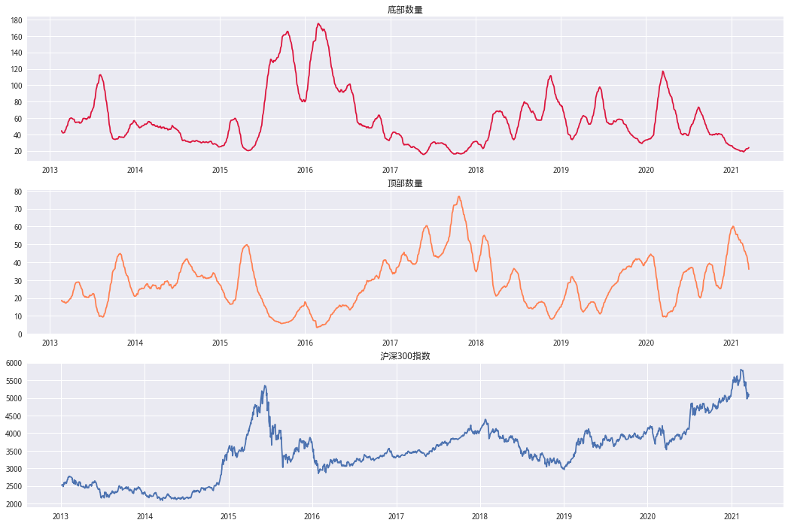
将两个组合做差,可以看到拐点与指数有一定的预见性。
N = 30
# 信号对数化方便做差
log_bottom = np.log(talib.EMA(bottom_ser,N))
log_top = np.log(talib.EMA(top_ser,N))
diff_signal = log_top - log_bottom # 差值
line = diff_signal.plot(figsize=(18,4),secondary_y=True)
benchmark['close'].plot(ax=line)
<matplotlib.axes._subplots.AxesSubplot at 0x7fcf13426fd0>
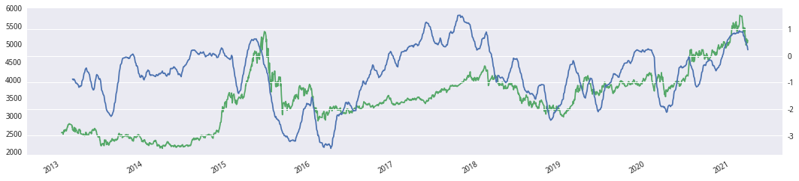
# 信号双均线
flag = diff_signal - talib.EMA(diff_signal,10)
flag = (flag > 0) * 1
next_ret = benchmark['close'].pct_change().shift(-1)
algorithm_ret = flag * next_ret
cumRet = 1 + ep.cum_returns(algorithm_ret)
trade_info = tradeAnalyze(flag,next_ret) # 初始化交易信息
# 画图
cumRet.plot(figsize=(18,5),label='净值',title='回测')
(benchmark['close'] / benchmark['close'][0]).plot(color='darkgray',label='HS300')
plot_trade_pos(trade_info,benchmark['close'] / benchmark['close'][0])
plt.legend()
<matplotlib.legend.Legend at 0x7f9c21ec1b00>
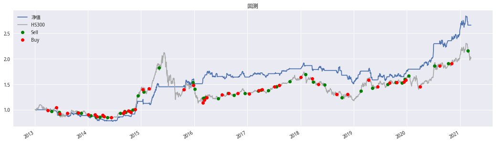
# 风险指标
Strategy_performance(algorithm_ret,'daily').style.format('{:.2%}')
| ret | |
|---|---|
| 年化收益率 | 13.15% |
| 波动率 | 13.94% |
| 夏普 | 95.63% |
| 最大回撤 | -23.85% |
# 展示交易明细
trade_info.show_all()
| 交易次数 | 45 | ||||
|---|---|---|---|---|---|
| 持仓总天数 | 1047 | ||||
| 胜率 | 57.78% | ||||
| 日胜率 | 28.00% | ||||
| 交易明细 | Buy | Sell | Hold_days | Hold_returns | |
| 0 | 2013-04-01 | 2013-04-26 | 18 | -1.63% | |
| 1 | 2013-05-28 | 2013-06-17 | 12 | -8.81% | |
| 2 | 2013-06-20 | 2013-06-21 | 2 | -6.48% | |
| 3 | 2013-08-13 | 2013-10-25 | 47 | 0.59% | |
| 4 | 2013-10-29 | 2013-11-15 | 14 | 2.52% | |
| 5 | 2014-01-03 | 2014-01-22 | 14 | -2.51% | |
| 6 | 2014-02-20 | 2014-02-26 | 5 | -5.94% | |
| 7 | 2014-03-03 | 2014-03-24 | 16 | -0.57% | |
| 8 | 2014-04-11 | 2014-04-17 | 5 | -2.04% | |
| 9 | 2014-04-21 | 2014-05-15 | 17 | -1.85% | |
| 10 | 2014-06-12 | 2014-08-11 | 43 | 9.22% | |
| 11 | 2014-09-01 | 2014-09-09 | 6 | 3.24% | |
| 12 | 2014-09-11 | 2014-09-17 | 5 | -0.59% | |
| 13 | 2014-10-08 | 2014-10-16 | 7 | -1.48% | |
| 14 | 2014-10-23 | 2014-11-04 | 9 | 4.44% | |
| 15 | 2014-11-20 | 2014-12-10 | 15 | 23.22% | |
| 16 | 2015-01-13 | 2015-01-20 | 6 | 1.45% | |
| 17 | 2015-02-26 | 2015-05-05 | 47 | 25.02% | |
| 18 | 2015-10-22 | 2015-12-23 | 45 | 8.90% | |
| 19 | 2015-12-28 | 2016-01-06 | 7 | -11.82% | |
| 20 | 2016-02-29 | 2016-03-04 | 5 | 7.71% | |
| 21 | 2016-03-10 | 2016-03-17 | 6 | 5.17% | |
| 22 | 2016-03-29 | 2016-06-14 | 52 | -0.30% | |
| 23 | 2016-07-12 | 2016-08-22 | 30 | 2.18% | |
| 24 | 2016-08-24 | 2016-09-29 | 25 | -2.27% | |
| 25 | 2016-10-28 | 2016-12-15 | 35 | 0.28% | |
| 26 | 2017-01-12 | 2017-03-17 | 42 | 3.95% | |
| 27 | 2017-03-21 | 2017-04-05 | 10 | 1.39% | |
| 28 | 2017-04-11 | 2017-05-25 | 32 | -1.00% | |
| 29 | 2017-07-07 | 2017-07-18 | 8 | 2.02% | |
| 30 | 2017-08-09 | 2017-10-20 | 48 | 5.29% | |
| 31 | 2018-01-04 | 2018-02-05 | 23 | 0.58% | |
| 32 | 2018-03-21 | 2018-03-29 | 7 | -4.01% | |
| 33 | 2018-05-03 | 2018-06-15 | 32 | -4.43% | |
| 34 | 2018-09-05 | 2018-10-11 | 21 | -3.59% | |
| 35 | 2018-11-19 | 2019-02-20 | 61 | 4.83% | |
| 36 | 2019-04-12 | 2019-05-09 | 17 | -6.31% | |
| 37 | 2019-06-14 | 2019-08-22 | 50 | 4.72% | |
| 38 | 2019-09-03 | 2019-10-18 | 28 | 0.79% | |
| 39 | 2019-10-24 | 2019-11-28 | 26 | -1.02% | |
| 40 | 2019-12-11 | 2019-12-18 | 6 | 3.17% | |
| 41 | 2019-12-25 | 2020-01-13 | 13 | 4.91% | |
| 42 | 2020-04-01 | 2020-07-07 | 64 | 26.64% | |
| 43 | 2020-08-14 | 2020-10-12 | 36 | 3.11% | |
| 44 | 2020-11-04 | 2021-02-24 | 75 | 13.33% | |
show_worst_drawdown_periods(algorithm_ret)
fig,ax = plt.subplots(figsize=(18,4))
plot_drawdown_periods(algorithm_ret,5,ax)
ax.plot(benchmark['close'] / benchmark['close'][0],color='darkgray')
| Worst drawdown periods | Net drawdown in % | Peak date | Valley date | Recovery date | Duration |
|---|---|---|---|---|---|
| 0 | 23.85 | 2013-04-18 | 2014-06-18 | 2014-11-28 | 422 |
| 1 | 21.25 | 2018-01-23 | 2019-01-02 | 2020-04-30 | 593 |
| 2 | 8.87 | 2015-01-15 | 2015-03-05 | 2015-03-17 | 44 |
| 3 | 8.87 | 2016-04-13 | 2016-07-29 | 2017-08-25 | 358 |
| 4 | 7.86 | 2015-12-29 | 2015-12-31 | 2016-03-03 | 48 |
[<matplotlib.lines.Line2D at 0x7f9c1df2a358>]
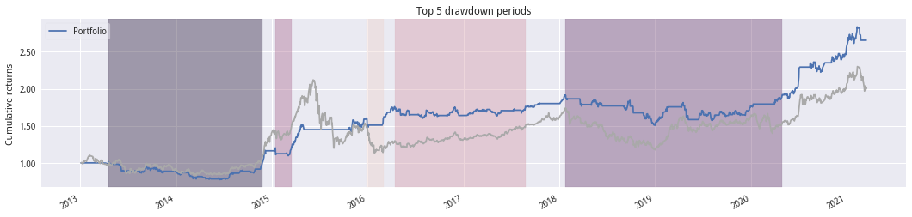
寻找最优参数#
使用sklearn将上述过程打包,并使用RandomizedSearchCV进行寻参。
from sklearn.base import TransformerMixin, BaseEstimator
from sklearn.model_selection import train_test_split
from sklearn.pipeline import Pipeline
from typing import Callable
# 构造趋势指标构建
class creatSignal_a(TransformerMixin, BaseEstimator):
def __init__(self, creatperiod: int,creatfunc:Callable)->None:
'''
createperiod:头部-顶部的数量周期
creatfunc:均线计算方法函数
'''
self.creatperiod = creatperiod
self.creatfunc = creatfunc
def fit(self, factor_df:pd.Series, returns=None):
return self
def transform(self, factor_df:pd.DataFrame)->pd.Series:
# 每日分组
rank_df = factor_df.apply(pd.cut,bins=5,labels=['G%s'%i for i in range(1,6)],axis=1)
bottom_ser = (rank_df == 'G1').sum(axis=1)
top_ser = (rank_df == 'G5').sum(axis=1)
log_bottom = np.log(self.creatfunc(bottom_ser,self.creatperiod))
log_top = np.log(self.creatfunc(top_ser,self.creatperiod))
diff_signal = log_top - log_bottom # 差值
return diff_signal.dropna()
# 策略构建
class AlgorthmStrategy_a(BaseEstimator):
def __init__(self, window:int,mafunc:Callable)->None:
self.window = window
self.mafunc = mafunc
# 策略是如何训练的
def fit(self, signal:pd.Series, returns:pd.Series)->pd.Series:
'''
signal:信号数据
returns:收益数据
'''
idx = signal.index
algorithm_ret = self.predict(signal) * returns.shift(-1).reindex(idx)
return algorithm_ret.dropna()
# 策略如何进行信号生成
def predict(self, signal:pd.Series)->pd.Series:
'''singal:信号数据'''
longSignal = self.mafunc(signal,self.window)
diffSeries = signal - longSignal # 双均线信号
return (diffSeries > 0) * 1
# 如何判断策略是优是劣质
def score(self, signal:pd.Series, returns:pd.Series)->float:
'''本质上是设置一个目标函数'''
ret = self.fit(signal, returns)
# 优化指标为： 卡玛比率 + 夏普
# 分数越大越好
risk = ep.calmar_ratio(ret) + ep.sharpe_ratio(ret)
return risk
from sklearn.model_selection import RandomizedSearchCV
import scipy.stats as st
# 回测时间设置
startDt = factor_df.index.min().strftime('%Y-%m-%d')
endDt = factor_df.index.max().strftime('%Y-%m-%d')
# 基准
benchmark = get_price('000300.XSHG',startDt,endDt,fields='close',panel=False)
returns = benchmark['close'].pct_change().reindex(factor_df.index)
# 构造PIPELINE
ivr_timing = Pipeline([('creatSignal', creatSignal_a(30, talib.SMA)),
('backtesting', AlgorthmStrategy_a(5, talib.SMA))])
# 寻参范围设置
## 阈值
randint = st.randint(low=3, high=150)
window_randint = st.randint(low=2,high=60)
# 超参设置
param_grid = {'creatSignal__creatperiod': randint,
'backtesting__window': window_randint
}
grid_search = RandomizedSearchCV(
ivr_timing, param_grid, n_iter=100, verbose=2, n_jobs=3,random_state=42)
grid_search.fit(factor_df, returns)
Fitting 3 folds for each of 100 candidates, totalling 300 fits
[CV] backtesting__window=40, creatSignal__creatperiod=95 .............
[CV] backtesting__window=40, creatSignal__creatperiod=95 .............
[CV] backtesting__window=40, creatSignal__creatperiod=95 .............
[CV] backtesting__window=40, creatSignal__creatperiod=95, total= 4.9s
[CV] backtesting__window=16, creatSignal__creatperiod=109 ............
[CV] backtesting__window=40, creatSignal__creatperiod=95, total= 4.9s
[CV] backtesting__window=16, creatSignal__creatperiod=109 ............
[CV] backtesting__window=40, creatSignal__creatperiod=95, total= 5.2s
[CV] backtesting__window=16, creatSignal__creatperiod=109 ............
[CV] backtesting__window=16, creatSignal__creatperiod=109, total= 5.2s
[CV] backtesting__window=9, creatSignal__creatperiod=23 ..............
[CV] backtesting__window=16, creatSignal__creatperiod=109, total= 5.1s
[CV] backtesting__window=9, creatSignal__creatperiod=23 ..............
[CV] backtesting__window=16, creatSignal__creatperiod=109, total= 4.9s
[CV] backtesting__window=9, creatSignal__creatperiod=23 ..............
[CV] backtesting__window=9, creatSignal__creatperiod=23, total= 5.2s
[CV] backtesting__window=40, creatSignal__creatperiod=124 ............
[CV] backtesting__window=9, creatSignal__creatperiod=23, total= 4.8s
[CV] backtesting__window=40, creatSignal__creatperiod=124 ............
[CV] backtesting__window=9, creatSignal__creatperiod=23, total= 5.2s
[CV] backtesting__window=40, creatSignal__creatperiod=124 ............
[CV] backtesting__window=40, creatSignal__creatperiod=124, total= 5.0s
[CV] backtesting__window=20, creatSignal__creatperiod=77 .............
[CV] backtesting__window=40, creatSignal__creatperiod=124, total= 5.1s
[CV] backtesting__window=20, creatSignal__creatperiod=77 .............
[CV] backtesting__window=40, creatSignal__creatperiod=124, total= 5.2s
[CV] backtesting__window=20, creatSignal__creatperiod=77 .............
[CV] backtesting__window=20, creatSignal__creatperiod=77, total= 4.8s
[CV] backtesting__window=12, creatSignal__creatperiod=90 .............
[CV] backtesting__window=20, creatSignal__creatperiod=77, total= 5.0s
[CV] backtesting__window=12, creatSignal__creatperiod=90 .............
[CV] backtesting__window=20, creatSignal__creatperiod=77, total= 5.1s
[CV] backtesting__window=12, creatSignal__creatperiod=90 .............
[CV] backtesting__window=12, creatSignal__creatperiod=90, total= 5.1s
[CV] backtesting__window=54, creatSignal__creatperiod=102 ............
[CV] backtesting__window=12, creatSignal__creatperiod=90, total= 4.9s
[CV] backtesting__window=54, creatSignal__creatperiod=102 ............
[CV] backtesting__window=12, creatSignal__creatperiod=90, total= 4.9s
[CV] backtesting__window=54, creatSignal__creatperiod=102 ............
[CV] backtesting__window=54, creatSignal__creatperiod=102, total= 5.1s
[CV] backtesting__window=41, creatSignal__creatperiod=133 ............
[CV] backtesting__window=54, creatSignal__creatperiod=102, total= 4.9s
[CV] backtesting__window=41, creatSignal__creatperiod=133 ............
[CV] backtesting__window=54, creatSignal__creatperiod=102, total= 5.1s
[CV] backtesting__window=41, creatSignal__creatperiod=133 ............
[CV] backtesting__window=41, creatSignal__creatperiod=133, total= 4.8s
[CV] backtesting__window=23, creatSignal__creatperiod=55 .............
[CV] backtesting__window=41, creatSignal__creatperiod=133, total= 4.9s
[CV] backtesting__window=23, creatSignal__creatperiod=55 .............
[CV] backtesting__window=41, creatSignal__creatperiod=133, total= 5.4s
[CV] backtesting__window=23, creatSignal__creatperiod=55 .............
[CV] backtesting__window=23, creatSignal__creatperiod=55, total= 5.0s
[CV] backtesting__window=3, creatSignal__creatperiod=90 ..............
[CV] backtesting__window=23, creatSignal__creatperiod=55, total= 4.9s
[CV] backtesting__window=3, creatSignal__creatperiod=90 ..............
[CV] backtesting__window=23, creatSignal__creatperiod=55, total= 5.0s
[CV] backtesting__window=3, creatSignal__creatperiod=90 ..............
[CV] backtesting__window=3, creatSignal__creatperiod=90, total= 4.8s
[CV] backtesting__window=45, creatSignal__creatperiod=40 .............
[CV] backtesting__window=3, creatSignal__creatperiod=90, total= 5.0s
[CV] backtesting__window=45, creatSignal__creatperiod=40 .............
[CV] backtesting__window=3, creatSignal__creatperiod=90, total= 4.8s
[CV] backtesting__window=45, creatSignal__creatperiod=40 .............
[CV] backtesting__window=45, creatSignal__creatperiod=40, total= 5.1s
[CV] backtesting__window=3, creatSignal__creatperiod=23 ..............
[CV] backtesting__window=45, creatSignal__creatperiod=40, total= 5.0s
[CV] backtesting__window=3, creatSignal__creatperiod=23 ..............
[CV] backtesting__window=45, creatSignal__creatperiod=40, total= 4.8s
[CV] backtesting__window=3, creatSignal__creatperiod=23 ..............
[CV] backtesting__window=3, creatSignal__creatperiod=23, total= 5.2s
[CV] backtesting__window=34, creatSignal__creatperiod=60 .............
[CV] backtesting__window=3, creatSignal__creatperiod=23, total= 5.0s
[CV] backtesting__window=34, creatSignal__creatperiod=60 .............
[Parallel(n_jobs=3)]: Done 35 tasks | elapsed: 1.7min
[CV] backtesting__window=3, creatSignal__creatperiod=23, total= 5.3s
[CV] backtesting__window=34, creatSignal__creatperiod=60 .............
[CV] backtesting__window=34, creatSignal__creatperiod=60, total= 4.9s
[CV] backtesting__window=23, creatSignal__creatperiod=91 .............
[CV] backtesting__window=34, creatSignal__creatperiod=60, total= 5.1s
[CV] backtesting__window=23, creatSignal__creatperiod=91 .............
[CV] backtesting__window=34, creatSignal__creatperiod=60, total= 5.0s
[CV] backtesting__window=23, creatSignal__creatperiod=91 .............
[CV] backtesting__window=23, creatSignal__creatperiod=91, total= 4.9s
[CV] backtesting__window=50, creatSignal__creatperiod=61 .............
[CV] backtesting__window=23, creatSignal__creatperiod=91, total= 4.9s
[CV] backtesting__window=50, creatSignal__creatperiod=61 .............
[CV] backtesting__window=23, creatSignal__creatperiod=91, total= 4.9s
[CV] backtesting__window=50, creatSignal__creatperiod=61 .............
[CV] backtesting__window=50, creatSignal__creatperiod=61, total= 4.8s
[CV] backtesting__window=43, creatSignal__creatperiod=17 .............
[CV] backtesting__window=50, creatSignal__creatperiod=61, total= 5.1s
[CV] backtesting__window=43, creatSignal__creatperiod=17 .............
[CV] backtesting__window=50, creatSignal__creatperiod=61, total= 5.0s
[CV] backtesting__window=43, creatSignal__creatperiod=17 .............
[CV] backtesting__window=43, creatSignal__creatperiod=17, total= 4.8s
[CV] backtesting__window=48, creatSignal__creatperiod=53 .............
[CV] backtesting__window=43, creatSignal__creatperiod=17, total= 5.1s
[CV] backtesting__window=48, creatSignal__creatperiod=53 .............
[CV] backtesting__window=43, creatSignal__creatperiod=17, total= 5.0s
[CV] backtesting__window=48, creatSignal__creatperiod=53 .............
[CV] backtesting__window=48, creatSignal__creatperiod=53, total= 4.9s
[CV] backtesting__window=45, creatSignal__creatperiod=57 .............
[CV] backtesting__window=48, creatSignal__creatperiod=53, total= 4.9s
[CV] backtesting__window=45, creatSignal__creatperiod=57 .............
[CV] backtesting__window=48, creatSignal__creatperiod=53, total= 4.9s
[CV] backtesting__window=45, creatSignal__creatperiod=57 .............
[CV] backtesting__window=45, creatSignal__creatperiod=57, total= 4.8s
[CV] backtesting__window=53, creatSignal__creatperiod=66 .............
[CV] backtesting__window=45, creatSignal__creatperiod=57, total= 5.0s
[CV] backtesting__window=53, creatSignal__creatperiod=66 .............
[CV] backtesting__window=45, creatSignal__creatperiod=57, total= 4.9s
[CV] backtesting__window=53, creatSignal__creatperiod=66 .............
[CV] backtesting__window=53, creatSignal__creatperiod=66, total= 5.0s
[CV] backtesting__window=58, creatSignal__creatperiod=133 ............
[CV] backtesting__window=53, creatSignal__creatperiod=66, total= 5.1s
[CV] backtesting__window=58, creatSignal__creatperiod=133 ............
[CV] backtesting__window=53, creatSignal__creatperiod=66, total= 4.9s
[CV] backtesting__window=58, creatSignal__creatperiod=133 ............
[CV] backtesting__window=58, creatSignal__creatperiod=133, total= 4.8s
[CV] backtesting__window=38, creatSignal__creatperiod=53 .............
[CV] backtesting__window=58, creatSignal__creatperiod=133, total= 5.0s
[CV] backtesting__window=38, creatSignal__creatperiod=53 .............
[CV] backtesting__window=58, creatSignal__creatperiod=133, total= 5.0s
[CV] backtesting__window=38, creatSignal__creatperiod=53 .............
[CV] backtesting__window=38, creatSignal__creatperiod=53, total= 5.0s
[CV] backtesting__window=8, creatSignal__creatperiod=23 ..............
[CV] backtesting__window=38, creatSignal__creatperiod=53, total= 5.0s
[CV] backtesting__window=8, creatSignal__creatperiod=23 ..............
[CV] backtesting__window=38, creatSignal__creatperiod=53, total= 5.0s
[CV] backtesting__window=8, creatSignal__creatperiod=23 ..............
[CV] backtesting__window=8, creatSignal__creatperiod=23, total= 5.0s
[CV] backtesting__window=10, creatSignal__creatperiod=20 .............
[CV] backtesting__window=8, creatSignal__creatperiod=23, total= 5.2s
[CV] backtesting__window=10, creatSignal__creatperiod=20 .............
[CV] backtesting__window=8, creatSignal__creatperiod=23, total= 5.3s
[CV] backtesting__window=10, creatSignal__creatperiod=20 .............
[CV] backtesting__window=10, creatSignal__creatperiod=20, total= 5.2s
[CV] backtesting__window=5, creatSignal__creatperiod=91 ..............
[CV] backtesting__window=10, creatSignal__creatperiod=20, total= 5.0s
[CV] backtesting__window=5, creatSignal__creatperiod=91 ..............
[CV] backtesting__window=10, creatSignal__creatperiod=20, total= 5.0s
[CV] backtesting__window=5, creatSignal__creatperiod=91 ..............
[CV] backtesting__window=5, creatSignal__creatperiod=91, total= 5.1s
[CV] backtesting__window=15, creatSignal__creatperiod=11 .............
[CV] backtesting__window=5, creatSignal__creatperiod=91, total= 5.0s
[CV] backtesting__window=15, creatSignal__creatperiod=11 .............
[CV] backtesting__window=5, creatSignal__creatperiod=91, total= 4.9s
[CV] backtesting__window=15, creatSignal__creatperiod=11 .............
[CV] backtesting__window=15, creatSignal__creatperiod=11, total= 5.1s
[CV] backtesting__window=27, creatSignal__creatperiod=55 .............
[CV] backtesting__window=15, creatSignal__creatperiod=11, total= 5.0s
[CV] backtesting__window=27, creatSignal__creatperiod=55 .............
[CV] backtesting__window=15, creatSignal__creatperiod=11, total= 5.0s
[CV] backtesting__window=27, creatSignal__creatperiod=55 .............
[CV] backtesting__window=27, creatSignal__creatperiod=55, total= 4.9s
[CV] backtesting__window=3, creatSignal__creatperiod=86 ..............
[CV] backtesting__window=27, creatSignal__creatperiod=55, total= 5.0s
[CV] backtesting__window=3, creatSignal__creatperiod=86 ..............
[CV] backtesting__window=27, creatSignal__creatperiod=55, total= 5.2s
[CV] backtesting__window=3, creatSignal__creatperiod=86 ..............
[CV] backtesting__window=3, creatSignal__creatperiod=86, total= 5.4s
[CV] backtesting__window=29, creatSignal__creatperiod=113 ............
[CV] backtesting__window=3, creatSignal__creatperiod=86, total= 5.6s
[CV] backtesting__window=29, creatSignal__creatperiod=113 ............
[CV] backtesting__window=3, creatSignal__creatperiod=86, total= 5.0s
[CV] backtesting__window=29, creatSignal__creatperiod=113 ............
[CV] backtesting__window=29, creatSignal__creatperiod=113, total= 5.0s
[CV] backtesting__window=8, creatSignal__creatperiod=10 ..............
[CV] backtesting__window=29, creatSignal__creatperiod=113, total= 5.3s
[CV] backtesting__window=8, creatSignal__creatperiod=10 ..............
[CV] backtesting__window=29, creatSignal__creatperiod=113, total= 5.0s
[CV] backtesting__window=8, creatSignal__creatperiod=10 ..............
[CV] backtesting__window=8, creatSignal__creatperiod=10, total= 4.9s
[CV] backtesting__window=48, creatSignal__creatperiod=37 .............
[CV] backtesting__window=8, creatSignal__creatperiod=10, total= 4.8s
[CV] backtesting__window=48, creatSignal__creatperiod=37 .............
[CV] backtesting__window=8, creatSignal__creatperiod=10, total= 4.9s
[CV] backtesting__window=48, creatSignal__creatperiod=37 .............
[CV] backtesting__window=48, creatSignal__creatperiod=37, total= 4.8s
[CV] backtesting__window=15, creatSignal__creatperiod=83 .............
[CV] backtesting__window=48, creatSignal__creatperiod=37, total= 4.7s
[CV] backtesting__window=15, creatSignal__creatperiod=83 .............
[CV] backtesting__window=48, creatSignal__creatperiod=37, total= 5.0s
[CV] backtesting__window=15, creatSignal__creatperiod=83 .............
[CV] backtesting__window=15, creatSignal__creatperiod=83, total= 5.0s
[CV] backtesting__window=37, creatSignal__creatperiod=52 .............
[CV] backtesting__window=15, creatSignal__creatperiod=83, total= 5.0s
[CV] backtesting__window=37, creatSignal__creatperiod=52 .............
[CV] backtesting__window=15, creatSignal__creatperiod=83, total= 4.9s
[CV] backtesting__window=37, creatSignal__creatperiod=52 .............
[CV] backtesting__window=37, creatSignal__creatperiod=52, total= 5.0s
[CV] backtesting__window=41, creatSignal__creatperiod=134 ............
[CV] backtesting__window=37, creatSignal__creatperiod=52, total= 4.8s
[CV] backtesting__window=41, creatSignal__creatperiod=134 ............
[CV] backtesting__window=37, creatSignal__creatperiod=52, total= 5.0s
[CV] backtesting__window=41, creatSignal__creatperiod=134 ............
[CV] backtesting__window=41, creatSignal__creatperiod=134, total= 4.8s
[CV] backtesting__window=3, creatSignal__creatperiod=136 .............
[CV] backtesting__window=41, creatSignal__creatperiod=134, total= 4.7s
[CV] backtesting__window=3, creatSignal__creatperiod=136 .............
[CV] backtesting__window=41, creatSignal__creatperiod=134, total= 4.8s
[CV] backtesting__window=3, creatSignal__creatperiod=136 .............
[CV] backtesting__window=3, creatSignal__creatperiod=136, total= 4.8s
[CV] backtesting__window=55, creatSignal__creatperiod=108 ............
[CV] backtesting__window=3, creatSignal__creatperiod=136, total= 4.9s
[CV] backtesting__window=55, creatSignal__creatperiod=108 ............
[CV] backtesting__window=3, creatSignal__creatperiod=136, total= 4.7s
[CV] backtesting__window=55, creatSignal__creatperiod=108 ............
[CV] backtesting__window=55, creatSignal__creatperiod=108, total= 5.2s
[CV] backtesting__window=5, creatSignal__creatperiod=56 ..............
[CV] backtesting__window=55, creatSignal__creatperiod=108, total= 5.0s
[CV] backtesting__window=5, creatSignal__creatperiod=56 ..............
[CV] backtesting__window=55, creatSignal__creatperiod=108, total= 4.9s
[CV] backtesting__window=5, creatSignal__creatperiod=56 ..............
[CV] backtesting__window=5, creatSignal__creatperiod=56, total= 5.0s
[CV] backtesting__window=30, creatSignal__creatperiod=148 ............
[CV] backtesting__window=5, creatSignal__creatperiod=56, total= 5.1s
[CV] backtesting__window=30, creatSignal__creatperiod=148 ............
[CV] backtesting__window=5, creatSignal__creatperiod=56, total= 4.9s
[CV] backtesting__window=30, creatSignal__creatperiod=148 ............
[CV] backtesting__window=30, creatSignal__creatperiod=148, total= 4.7s
[CV] backtesting__window=27, creatSignal__creatperiod=46 .............
[CV] backtesting__window=30, creatSignal__creatperiod=148, total= 4.9s
[CV] backtesting__window=27, creatSignal__creatperiod=46 .............
[CV] backtesting__window=30, creatSignal__creatperiod=148, total= 4.9s
[CV] backtesting__window=27, creatSignal__creatperiod=46 .............
[CV] backtesting__window=27, creatSignal__creatperiod=46, total= 4.9s
[CV] backtesting__window=35, creatSignal__creatperiod=16 .............
[CV] backtesting__window=27, creatSignal__creatperiod=46, total= 5.1s
[CV] backtesting__window=35, creatSignal__creatperiod=16 .............
[CV] backtesting__window=27, creatSignal__creatperiod=46, total= 5.0s
[CV] backtesting__window=35, creatSignal__creatperiod=16 .............
[CV] backtesting__window=35, creatSignal__creatperiod=16, total= 5.1s
[CV] backtesting__window=32, creatSignal__creatperiod=50 .............
[CV] backtesting__window=35, creatSignal__creatperiod=16, total= 5.0s
[CV] backtesting__window=32, creatSignal__creatperiod=50 .............
[CV] backtesting__window=35, creatSignal__creatperiod=16, total= 5.1s
[CV] backtesting__window=32, creatSignal__creatperiod=50 .............
[CV] backtesting__window=32, creatSignal__creatperiod=50, total= 4.9s
[CV] backtesting__window=16, creatSignal__creatperiod=42 .............
[CV] backtesting__window=32, creatSignal__creatperiod=50, total= 5.5s
[CV] backtesting__window=16, creatSignal__creatperiod=42 .............
[CV] backtesting__window=32, creatSignal__creatperiod=50, total= 5.1s
[CV] backtesting__window=16, creatSignal__creatperiod=42 .............
[CV] backtesting__window=16, creatSignal__creatperiod=42, total= 5.0s
[CV] backtesting__window=22, creatSignal__creatperiod=84 .............
[CV] backtesting__window=16, creatSignal__creatperiod=42, total= 5.1s
[CV] backtesting__window=22, creatSignal__creatperiod=84 .............
[CV] backtesting__window=16, creatSignal__creatperiod=42, total= 4.9s
[CV] backtesting__window=22, creatSignal__creatperiod=84 .............
[CV] backtesting__window=22, creatSignal__creatperiod=84, total= 5.1s
[CV] backtesting__window=48, creatSignal__creatperiod=55 .............
[CV] backtesting__window=22, creatSignal__creatperiod=84, total= 4.9s
[CV] backtesting__window=48, creatSignal__creatperiod=55 .............
[CV] backtesting__window=22, creatSignal__creatperiod=84, total= 5.0s
[CV] backtesting__window=48, creatSignal__creatperiod=55 .............
[CV] backtesting__window=48, creatSignal__creatperiod=55, total= 5.2s
[CV] backtesting__window=25, creatSignal__creatperiod=126 ............
[CV] backtesting__window=48, creatSignal__creatperiod=55, total= 5.0s
[CV] backtesting__window=25, creatSignal__creatperiod=126 ............
[CV] backtesting__window=48, creatSignal__creatperiod=55, total= 5.0s
[CV] backtesting__window=25, creatSignal__creatperiod=126 ............
[CV] backtesting__window=25, creatSignal__creatperiod=126, total= 5.2s
[CV] backtesting__window=46, creatSignal__creatperiod=43 .............
[CV] backtesting__window=25, creatSignal__creatperiod=126, total= 5.0s
[CV] backtesting__window=46, creatSignal__creatperiod=43 .............
[CV] backtesting__window=25, creatSignal__creatperiod=126, total= 5.2s
[CV] backtesting__window=46, creatSignal__creatperiod=43 .............
[CV] backtesting__window=46, creatSignal__creatperiod=43, total= 5.3s
[CV] backtesting__window=30, creatSignal__creatperiod=17 .............
[CV] backtesting__window=46, creatSignal__creatperiod=43, total= 5.0s
[CV] backtesting__window=30, creatSignal__creatperiod=17 .............
[CV] backtesting__window=46, creatSignal__creatperiod=43, total= 5.1s
[CV] backtesting__window=30, creatSignal__creatperiod=17 .............
[CV] backtesting__window=30, creatSignal__creatperiod=17, total= 4.9s
[CV] backtesting__window=46, creatSignal__creatperiod=67 .............
[CV] backtesting__window=30, creatSignal__creatperiod=17, total= 5.1s
[CV] backtesting__window=46, creatSignal__creatperiod=67 .............
[CV] backtesting__window=30, creatSignal__creatperiod=17, total= 5.6s
[CV] backtesting__window=46, creatSignal__creatperiod=67 .............
[CV] backtesting__window=46, creatSignal__creatperiod=67, total= 5.0s
[CV] backtesting__window=26, creatSignal__creatperiod=73 .............
[CV] backtesting__window=46, creatSignal__creatperiod=67, total= 5.2s
[CV] backtesting__window=26, creatSignal__creatperiod=73 .............
[CV] backtesting__window=46, creatSignal__creatperiod=67, total= 5.5s
[CV] backtesting__window=26, creatSignal__creatperiod=73 .............
[CV] backtesting__window=26, creatSignal__creatperiod=73, total= 5.6s
[CV] backtesting__window=10, creatSignal__creatperiod=90 .............
[CV] backtesting__window=26, creatSignal__creatperiod=73, total= 5.1s
[CV] backtesting__window=10, creatSignal__creatperiod=90 .............
[CV] backtesting__window=26, creatSignal__creatperiod=73, total= 4.9s
[CV] backtesting__window=10, creatSignal__creatperiod=90 .............
[CV] backtesting__window=10, creatSignal__creatperiod=90, total= 5.0s
[CV] backtesting__window=2, creatSignal__creatperiod=138 .............
[CV] backtesting__window=10, creatSignal__creatperiod=90, total= 5.3s
[CV] backtesting__window=2, creatSignal__creatperiod=138 .............
[CV] backtesting__window=10, creatSignal__creatperiod=90, total= 5.1s
[CV] backtesting__window=2, creatSignal__creatperiod=138 .............
[CV] backtesting__window=2, creatSignal__creatperiod=138, total= 5.0s
[CV] backtesting__window=25, creatSignal__creatperiod=65 .............
[CV] backtesting__window=2, creatSignal__creatperiod=138, total= 5.0s
[CV] backtesting__window=25, creatSignal__creatperiod=65 .............
[CV] backtesting__window=2, creatSignal__creatperiod=138, total= 4.9s
[CV] backtesting__window=25, creatSignal__creatperiod=65 .............
[CV] backtesting__window=25, creatSignal__creatperiod=65, total= 5.0s
[CV] backtesting__window=12, creatSignal__creatperiod=83 .............
[CV] backtesting__window=25, creatSignal__creatperiod=65, total= 5.1s
[CV] backtesting__window=12, creatSignal__creatperiod=83 .............
[CV] backtesting__window=25, creatSignal__creatperiod=65, total= 4.9s
[CV] backtesting__window=12, creatSignal__creatperiod=83 .............
[CV] backtesting__window=12, creatSignal__creatperiod=83, total= 4.9s
[CV] backtesting__window=9, creatSignal__creatperiod=35 ..............
[CV] backtesting__window=12, creatSignal__creatperiod=83, total= 5.2s
[CV] backtesting__window=9, creatSignal__creatperiod=35 ..............
[CV] backtesting__window=12, creatSignal__creatperiod=83, total= 5.0s
[CV] backtesting__window=9, creatSignal__creatperiod=35 ..............
[Parallel(n_jobs=3)]: Done 156 tasks | elapsed: 7.3min
[CV] backtesting__window=9, creatSignal__creatperiod=35, total= 5.2s
[CV] backtesting__window=6, creatSignal__creatperiod=43 ..............
[CV] backtesting__window=9, creatSignal__creatperiod=35, total= 5.1s
[CV] backtesting__window=6, creatSignal__creatperiod=43 ..............
[CV] backtesting__window=9, creatSignal__creatperiod=35, total= 5.0s
[CV] backtesting__window=6, creatSignal__creatperiod=43 ..............
[CV] backtesting__window=6, creatSignal__creatperiod=43, total= 5.1s
[CV] backtesting__window=29, creatSignal__creatperiod=137 ............
[CV] backtesting__window=6, creatSignal__creatperiod=43, total= 5.1s
[CV] backtesting__window=29, creatSignal__creatperiod=137 ............
[CV] backtesting__window=6, creatSignal__creatperiod=43, total= 4.9s
[CV] backtesting__window=29, creatSignal__creatperiod=137 ............
[CV] backtesting__window=29, creatSignal__creatperiod=137, total= 5.0s
[CV] backtesting__window=10, creatSignal__creatperiod=74 .............
[CV] backtesting__window=29, creatSignal__creatperiod=137, total= 5.0s
[CV] backtesting__window=10, creatSignal__creatperiod=74 .............
[CV] backtesting__window=29, creatSignal__creatperiod=137, total= 5.0s
[CV] backtesting__window=10, creatSignal__creatperiod=74 .............
[CV] backtesting__window=10, creatSignal__creatperiod=74, total= 4.7s
[CV] backtesting__window=13, creatSignal__creatperiod=35 .............
[CV] backtesting__window=10, creatSignal__creatperiod=74, total= 4.9s
[CV] backtesting__window=13, creatSignal__creatperiod=35 .............
[CV] backtesting__window=10, creatSignal__creatperiod=74, total= 4.9s
[CV] backtesting__window=13, creatSignal__creatperiod=35 .............
[CV] backtesting__window=13, creatSignal__creatperiod=35, total= 5.1s
[CV] backtesting__window=49, creatSignal__creatperiod=64 .............
[CV] backtesting__window=13, creatSignal__creatperiod=35, total= 4.9s
[CV] backtesting__window=49, creatSignal__creatperiod=64 .............
[CV] backtesting__window=13, creatSignal__creatperiod=35, total= 4.7s
[CV] backtesting__window=49, creatSignal__creatperiod=64 .............
[CV] backtesting__window=49, creatSignal__creatperiod=64, total= 4.8s
[CV] backtesting__window=25, creatSignal__creatperiod=39 .............
[CV] backtesting__window=49, creatSignal__creatperiod=64, total= 4.8s
[CV] backtesting__window=25, creatSignal__creatperiod=39 .............
[CV] backtesting__window=49, creatSignal__creatperiod=64, total= 4.9s
[CV] backtesting__window=25, creatSignal__creatperiod=39 .............
[CV] backtesting__window=25, creatSignal__creatperiod=39, total= 5.0s
[CV] backtesting__window=36, creatSignal__creatperiod=106 ............
[CV] backtesting__window=25, creatSignal__creatperiod=39, total= 4.9s
[CV] backtesting__window=36, creatSignal__creatperiod=106 ............
[CV] backtesting__window=25, creatSignal__creatperiod=39, total= 4.8s
[CV] backtesting__window=36, creatSignal__creatperiod=106 ............
[CV] backtesting__window=36, creatSignal__creatperiod=106, total= 5.0s
[CV] backtesting__window=23, creatSignal__creatperiod=37 .............
[CV] backtesting__window=36, creatSignal__creatperiod=106, total= 5.0s
[CV] backtesting__window=23, creatSignal__creatperiod=37 .............
[CV] backtesting__window=36, creatSignal__creatperiod=106, total= 5.2s
[CV] backtesting__window=23, creatSignal__creatperiod=37 .............
[CV] backtesting__window=23, creatSignal__creatperiod=37, total= 4.9s
[CV] backtesting__window=2, creatSignal__creatperiod=103 .............
[CV] backtesting__window=23, creatSignal__creatperiod=37, total= 4.9s
[CV] backtesting__window=2, creatSignal__creatperiod=103 .............
[CV] backtesting__window=23, creatSignal__creatperiod=37, total= 5.1s
[CV] backtesting__window=2, creatSignal__creatperiod=103 .............
[CV] backtesting__window=2, creatSignal__creatperiod=103, total= 5.0s
[CV] backtesting__window=48, creatSignal__creatperiod=133 ............
[CV] backtesting__window=2, creatSignal__creatperiod=103, total= 4.9s
[CV] backtesting__window=48, creatSignal__creatperiod=133 ............
[CV] backtesting__window=2, creatSignal__creatperiod=103, total= 4.9s
[CV] backtesting__window=48, creatSignal__creatperiod=133 ............
[CV] backtesting__window=48, creatSignal__creatperiod=133, total= 4.9s
[CV] backtesting__window=2, creatSignal__creatperiod=7 ...............
[CV] backtesting__window=48, creatSignal__creatperiod=133, total= 4.9s
[CV] backtesting__window=2, creatSignal__creatperiod=7 ...............
[CV] backtesting__window=48, creatSignal__creatperiod=133, total= 5.0s
[CV] backtesting__window=2, creatSignal__creatperiod=7 ...............
[CV] backtesting__window=2, creatSignal__creatperiod=7, total= 4.9s
[CV] backtesting__window=27, creatSignal__creatperiod=144 ............
[CV] backtesting__window=2, creatSignal__creatperiod=7, total= 5.0s
[CV] backtesting__window=27, creatSignal__creatperiod=144 ............
[CV] backtesting__window=2, creatSignal__creatperiod=7, total= 5.1s
[CV] backtesting__window=27, creatSignal__creatperiod=144 ............
[CV] backtesting__window=27, creatSignal__creatperiod=144, total= 5.1s
[CV] backtesting__window=40, creatSignal__creatperiod=29 .............
[CV] backtesting__window=27, creatSignal__creatperiod=144, total= 5.0s
[CV] backtesting__window=40, creatSignal__creatperiod=29 .............
[CV] backtesting__window=27, creatSignal__creatperiod=144, total= 4.8s
[CV] backtesting__window=40, creatSignal__creatperiod=29 .............
[CV] backtesting__window=40, creatSignal__creatperiod=29, total= 5.1s
[CV] backtesting__window=10, creatSignal__creatperiod=17 .............
[CV] backtesting__window=40, creatSignal__creatperiod=29, total= 4.9s
[CV] backtesting__window=10, creatSignal__creatperiod=17 .............
[CV] backtesting__window=40, creatSignal__creatperiod=29, total= 5.0s
[CV] backtesting__window=10, creatSignal__creatperiod=17 .............
[CV] backtesting__window=10, creatSignal__creatperiod=17, total= 5.4s
[CV] backtesting__window=27, creatSignal__creatperiod=44 .............
[CV] backtesting__window=10, creatSignal__creatperiod=17, total= 5.1s
[CV] backtesting__window=27, creatSignal__creatperiod=44 .............
[CV] backtesting__window=10, creatSignal__creatperiod=17, total= 5.7s
[CV] backtesting__window=27, creatSignal__creatperiod=44 .............
[CV] backtesting__window=27, creatSignal__creatperiod=44, total= 5.0s
[CV] backtesting__window=14, creatSignal__creatperiod=65 .............
[CV] backtesting__window=27, creatSignal__creatperiod=44, total= 5.0s
[CV] backtesting__window=14, creatSignal__creatperiod=65 .............
[CV] backtesting__window=27, creatSignal__creatperiod=44, total= 5.2s
[CV] backtesting__window=14, creatSignal__creatperiod=65 .............
[CV] backtesting__window=14, creatSignal__creatperiod=65, total= 5.0s
[CV] backtesting__window=33, creatSignal__creatperiod=54 .............
[CV] backtesting__window=14, creatSignal__creatperiod=65, total= 5.3s
[CV] backtesting__window=33, creatSignal__creatperiod=54 .............
[CV] backtesting__window=14, creatSignal__creatperiod=65, total= 5.3s
[CV] backtesting__window=33, creatSignal__creatperiod=54 .............
[CV] backtesting__window=33, creatSignal__creatperiod=54, total= 5.1s
[CV] backtesting__window=33, creatSignal__creatperiod=134 ............
[CV] backtesting__window=33, creatSignal__creatperiod=54, total= 5.1s
[CV] backtesting__window=33, creatSignal__creatperiod=134 ............
[CV] backtesting__window=33, creatSignal__creatperiod=54, total= 5.1s
[CV] backtesting__window=33, creatSignal__creatperiod=134 ............
[CV] backtesting__window=33, creatSignal__creatperiod=134, total= 5.3s
[CV] backtesting__window=31, creatSignal__creatperiod=145 ............
[CV] backtesting__window=33, creatSignal__creatperiod=134, total= 5.3s
[CV] backtesting__window=31, creatSignal__creatperiod=145 ............
[CV] backtesting__window=33, creatSignal__creatperiod=134, total= 5.1s
[CV] backtesting__window=31, creatSignal__creatperiod=145 ............
[CV] backtesting__window=31, creatSignal__creatperiod=145, total= 5.1s
[CV] backtesting__window=44, creatSignal__creatperiod=31 .............
[CV] backtesting__window=31, creatSignal__creatperiod=145, total= 5.3s
[CV] backtesting__window=44, creatSignal__creatperiod=31 .............
[CV] backtesting__window=31, creatSignal__creatperiod=145, total= 5.2s
[CV] backtesting__window=44, creatSignal__creatperiod=31 .............
[CV] backtesting__window=44, creatSignal__creatperiod=31, total= 5.2s
[CV] backtesting__window=37, creatSignal__creatperiod=15 .............
[CV] backtesting__window=44, creatSignal__creatperiod=31, total= 5.2s
[CV] backtesting__window=37, creatSignal__creatperiod=15 .............
[CV] backtesting__window=44, creatSignal__creatperiod=31, total= 5.1s
[CV] backtesting__window=37, creatSignal__creatperiod=15 .............
[CV] backtesting__window=37, creatSignal__creatperiod=15, total= 5.4s
[CV] backtesting__window=33, creatSignal__creatperiod=73 .............
[CV] backtesting__window=37, creatSignal__creatperiod=15, total= 5.0s
[CV] backtesting__window=33, creatSignal__creatperiod=73 .............
[CV] backtesting__window=37, creatSignal__creatperiod=15, total= 5.1s
[CV] backtesting__window=33, creatSignal__creatperiod=73 .............
[CV] backtesting__window=33, creatSignal__creatperiod=73, total= 5.3s
[CV] backtesting__window=52, creatSignal__creatperiod=88 .............
[CV] backtesting__window=33, creatSignal__creatperiod=73, total= 5.5s
[CV] backtesting__window=52, creatSignal__creatperiod=88 .............
[CV] backtesting__window=33, creatSignal__creatperiod=73, total= 5.6s
[CV] backtesting__window=52, creatSignal__creatperiod=88 .............
[CV] backtesting__window=52, creatSignal__creatperiod=88, total= 4.9s
[CV] backtesting__window=29, creatSignal__creatperiod=68 .............
[CV] backtesting__window=52, creatSignal__creatperiod=88, total= 5.1s
[CV] backtesting__window=29, creatSignal__creatperiod=68 .............
[CV] backtesting__window=52, creatSignal__creatperiod=88, total= 5.1s
[CV] backtesting__window=29, creatSignal__creatperiod=68 .............
[CV] backtesting__window=29, creatSignal__creatperiod=68, total= 4.9s
[CV] backtesting__window=43, creatSignal__creatperiod=47 .............
[CV] backtesting__window=29, creatSignal__creatperiod=68, total= 5.3s
[CV] backtesting__window=43, creatSignal__creatperiod=47 .............
[CV] backtesting__window=29, creatSignal__creatperiod=68, total= 5.0s
[CV] backtesting__window=43, creatSignal__creatperiod=47 .............
[CV] backtesting__window=43, creatSignal__creatperiod=47, total= 5.1s
[CV] backtesting__window=58, creatSignal__creatperiod=136 ............
[CV] backtesting__window=43, creatSignal__creatperiod=47, total= 5.3s
[CV] backtesting__window=58, creatSignal__creatperiod=136 ............
[CV] backtesting__window=43, creatSignal__creatperiod=47, total= 5.1s
[CV] backtesting__window=58, creatSignal__creatperiod=136 ............
[CV] backtesting__window=58, creatSignal__creatperiod=136, total= 5.1s
[CV] backtesting__window=29, creatSignal__creatperiod=30 .............
[CV] backtesting__window=58, creatSignal__creatperiod=136, total= 5.3s
[CV] backtesting__window=29, creatSignal__creatperiod=30 .............
[CV] backtesting__window=58, creatSignal__creatperiod=136, total= 5.0s
[CV] backtesting__window=29, creatSignal__creatperiod=30 .............
[CV] backtesting__window=29, creatSignal__creatperiod=30, total= 5.0s
[CV] backtesting__window=45, creatSignal__creatperiod=46 .............
[CV] backtesting__window=29, creatSignal__creatperiod=30, total= 5.2s
[CV] backtesting__window=45, creatSignal__creatperiod=46 .............
[CV] backtesting__window=29, creatSignal__creatperiod=30, total= 5.1s
[CV] backtesting__window=45, creatSignal__creatperiod=46 .............
[CV] backtesting__window=45, creatSignal__creatperiod=46, total= 5.0s
[CV] backtesting__window=21, creatSignal__creatperiod=32 .............
[CV] backtesting__window=45, creatSignal__creatperiod=46, total= 5.0s
[CV] backtesting__window=21, creatSignal__creatperiod=32 .............
[CV] backtesting__window=45, creatSignal__creatperiod=46, total= 5.1s
[CV] backtesting__window=21, creatSignal__creatperiod=32 .............
[CV] backtesting__window=21, creatSignal__creatperiod=32, total= 5.0s
[CV] backtesting__window=12, creatSignal__creatperiod=130 ............
[CV] backtesting__window=21, creatSignal__creatperiod=32, total= 5.2s
[CV] backtesting__window=12, creatSignal__creatperiod=130 ............
[CV] backtesting__window=21, creatSignal__creatperiod=32, total= 5.4s
[CV] backtesting__window=12, creatSignal__creatperiod=130 ............
[CV] backtesting__window=12, creatSignal__creatperiod=130, total= 4.9s
[CV] backtesting__window=59, creatSignal__creatperiod=94 .............
[CV] backtesting__window=12, creatSignal__creatperiod=130, total= 5.2s
[CV] backtesting__window=59, creatSignal__creatperiod=94 .............
[CV] backtesting__window=12, creatSignal__creatperiod=130, total= 5.2s
[CV] backtesting__window=59, creatSignal__creatperiod=94 .............
[CV] backtesting__window=59, creatSignal__creatperiod=94, total= 4.9s
[CV] backtesting__window=26, creatSignal__creatperiod=131 ............
[CV] backtesting__window=59, creatSignal__creatperiod=94, total= 4.8s
[CV] backtesting__window=26, creatSignal__creatperiod=131 ............
[CV] backtesting__window=59, creatSignal__creatperiod=94, total= 4.8s
[CV] backtesting__window=26, creatSignal__creatperiod=131 ............
[CV] backtesting__window=26, creatSignal__creatperiod=131, total= 4.8s
[CV] backtesting__window=58, creatSignal__creatperiod=29 .............
[CV] backtesting__window=26, creatSignal__creatperiod=131, total= 5.2s
[CV] backtesting__window=58, creatSignal__creatperiod=29 .............
[CV] backtesting__window=26, creatSignal__creatperiod=131, total= 5.2s
[CV] backtesting__window=58, creatSignal__creatperiod=29 .............
[CV] backtesting__window=58, creatSignal__creatperiod=29, total= 5.1s
[CV] backtesting__window=58, creatSignal__creatperiod=118 ............
[CV] backtesting__window=58, creatSignal__creatperiod=29, total= 5.3s
[CV] backtesting__window=58, creatSignal__creatperiod=118 ............
[CV] backtesting__window=58, creatSignal__creatperiod=29, total= 5.1s
[CV] backtesting__window=58, creatSignal__creatperiod=118 ............
[CV] backtesting__window=58, creatSignal__creatperiod=118, total= 5.1s
[CV] backtesting__window=14, creatSignal__creatperiod=5 ..............
[CV] backtesting__window=58, creatSignal__creatperiod=118, total= 5.2s
[CV] backtesting__window=14, creatSignal__creatperiod=5 ..............
[CV] backtesting__window=58, creatSignal__creatperiod=118, total= 5.0s
[CV] backtesting__window=14, creatSignal__creatperiod=5 ..............
[CV] backtesting__window=14, creatSignal__creatperiod=5, total= 5.0s
[CV] backtesting__window=40, creatSignal__creatperiod=139 ............
[CV] backtesting__window=14, creatSignal__creatperiod=5, total= 4.9s
[CV] backtesting__window=40, creatSignal__creatperiod=139 ............
[CV] backtesting__window=14, creatSignal__creatperiod=5, total= 5.0s
[CV] backtesting__window=40, creatSignal__creatperiod=139 ............
[CV] backtesting__window=40, creatSignal__creatperiod=139, total= 4.9s
[CV] backtesting__window=38, creatSignal__creatperiod=53 .............
[CV] backtesting__window=40, creatSignal__creatperiod=139, total= 4.9s
[CV] backtesting__window=38, creatSignal__creatperiod=53 .............
[CV] backtesting__window=40, creatSignal__creatperiod=139, total= 5.1s
[CV] backtesting__window=38, creatSignal__creatperiod=53 .............
[CV] backtesting__window=38, creatSignal__creatperiod=53, total= 5.1s
[CV] backtesting__window=43, creatSignal__creatperiod=61 .............
[CV] backtesting__window=38, creatSignal__creatperiod=53, total= 4.8s
[CV] backtesting__window=43, creatSignal__creatperiod=61 .............
[CV] backtesting__window=38, creatSignal__creatperiod=53, total= 4.9s
[CV] backtesting__window=43, creatSignal__creatperiod=61 .............
[CV] backtesting__window=43, creatSignal__creatperiod=61, total= 5.0s
[CV] backtesting__window=55, creatSignal__creatperiod=98 .............
[CV] backtesting__window=43, creatSignal__creatperiod=61, total= 5.3s
[CV] backtesting__window=55, creatSignal__creatperiod=98 .............
[CV] backtesting__window=43, creatSignal__creatperiod=61, total= 5.0s
[CV] backtesting__window=55, creatSignal__creatperiod=98 .............
[CV] backtesting__window=55, creatSignal__creatperiod=98, total= 5.1s
[CV] backtesting__window=25, creatSignal__creatperiod=115 ............
[CV] backtesting__window=55, creatSignal__creatperiod=98, total= 4.8s
[CV] backtesting__window=25, creatSignal__creatperiod=115 ............
[CV] backtesting__window=55, creatSignal__creatperiod=98, total= 5.0s
[CV] backtesting__window=25, creatSignal__creatperiod=115 ............
[CV] backtesting__window=25, creatSignal__creatperiod=115, total= 5.3s
[CV] backtesting__window=50, creatSignal__creatperiod=54 .............
[CV] backtesting__window=25, creatSignal__creatperiod=115, total= 5.2s
[CV] backtesting__window=50, creatSignal__creatperiod=54 .............
[CV] backtesting__window=25, creatSignal__creatperiod=115, total= 5.4s
[CV] backtesting__window=50, creatSignal__creatperiod=54 .............
[CV] backtesting__window=50, creatSignal__creatperiod=54, total= 5.2s
[CV] backtesting__window=13, creatSignal__creatperiod=41 .............
[CV] backtesting__window=50, creatSignal__creatperiod=54, total= 5.4s
[CV] backtesting__window=13, creatSignal__creatperiod=41 .............
[CV] backtesting__window=50, creatSignal__creatperiod=54, total= 5.0s
[CV] backtesting__window=13, creatSignal__creatperiod=41 .............
[CV] backtesting__window=13, creatSignal__creatperiod=41, total= 5.5s
[CV] backtesting__window=3, creatSignal__creatperiod=133 .............
[CV] backtesting__window=13, creatSignal__creatperiod=41, total= 5.0s
[CV] backtesting__window=3, creatSignal__creatperiod=133 .............
[CV] backtesting__window=13, creatSignal__creatperiod=41, total= 5.1s
[CV] backtesting__window=3, creatSignal__creatperiod=133 .............
[CV] backtesting__window=3, creatSignal__creatperiod=133, total= 5.2s
[CV] backtesting__window=50, creatSignal__creatperiod=103 ............
[CV] backtesting__window=3, creatSignal__creatperiod=133, total= 4.9s
[CV] backtesting__window=50, creatSignal__creatperiod=103 ............
[CV] backtesting__window=3, creatSignal__creatperiod=133, total= 5.2s
[CV] backtesting__window=50, creatSignal__creatperiod=103 ............
[CV] backtesting__window=50, creatSignal__creatperiod=103, total= 5.3s
[CV] backtesting__window=50, creatSignal__creatperiod=83 .............
[CV] backtesting__window=50, creatSignal__creatperiod=103, total= 5.0s
[CV] backtesting__window=50, creatSignal__creatperiod=83 .............
[CV] backtesting__window=50, creatSignal__creatperiod=103, total= 5.0s
[CV] backtesting__window=50, creatSignal__creatperiod=83 .............
[CV] backtesting__window=50, creatSignal__creatperiod=83, total= 5.1s
[CV] backtesting__window=50, creatSignal__creatperiod=4 ..............
[CV] backtesting__window=50, creatSignal__creatperiod=83, total= 5.1s
[CV] backtesting__window=50, creatSignal__creatperiod=4 ..............
[CV] backtesting__window=50, creatSignal__creatperiod=83, total= 5.2s
[CV] backtesting__window=50, creatSignal__creatperiod=4 ..............
[CV] backtesting__window=50, creatSignal__creatperiod=4, total= 5.1s
[CV] backtesting__window=3, creatSignal__creatperiod=56 ..............
[CV] backtesting__window=50, creatSignal__creatperiod=4, total= 5.2s
[CV] backtesting__window=3, creatSignal__creatperiod=56 ..............
[CV] backtesting__window=50, creatSignal__creatperiod=4, total= 5.3s
[CV] backtesting__window=3, creatSignal__creatperiod=56 ..............
[CV] backtesting__window=3, creatSignal__creatperiod=56, total= 4.9s
[CV] backtesting__window=3, creatSignal__creatperiod=56, total= 5.0s
[CV] backtesting__window=3, creatSignal__creatperiod=56, total= 5.0s
[Parallel(n_jobs=3)]: Done 300 out of 300 | elapsed: 14.0min finished
RandomizedSearchCV(cv=None, error_score='raise',
estimator=Pipeline(memory=None,
steps=[('creatSignal', creatSignal_a(creatfunc=<function SMA at 0x7fbdfd568950>, creatperiod=30)), ('backtesting', AlgorthmStrategy_a(mafunc=<function SMA at 0x7fbdfd568950>, window=5))]),
fit_params=None, iid=True, n_iter=100, n_jobs=3,
param_distributions={'creatSignal__creatperiod': <scipy.stats._distn_infrastructure.rv_frozen object at 0x7fbdd27d0438>, 'backtesting__window': <scipy.stats._distn_infrastructure.rv_frozen object at 0x7fbdcef82c18>},
pre_dispatch='2*n_jobs', random_state=42, refit=True,
return_train_score='warn', scoring=None, verbose=2)
# 最优参数
grid_search.best_params_
{'backtesting__window': 44, 'creatSignal__creatperiod': 31}
回测
金叉买入,死叉卖出
# 使用最优参数构建开平仓 使用最优估计
flag = grid_search.best_estimator_.predict(factor_df)
next_ret = returns.shift(-1)
# 计算收益率
algorithm_ret = flag * next_ret
trade_info = tradeAnalyze(flag,next_ret) # 初始化交易信息
mpl.rcParams['font.family'] = 'serif'
# 画图
(1 + ep.cum_returns(algorithm_ret)).plot(
figsize=(18, 5), label='异常交易因子择时',title='异常交易因子择时',color='r')
(benchmark['close'] / benchmark['close'][0]).plot(label='HS300',color='darkgray')
plot_trade_pos(trade_info,benchmark['close'] / benchmark['close'][0])
plt.legend()
<matplotlib.legend.Legend at 0x7fbdcef556d8>
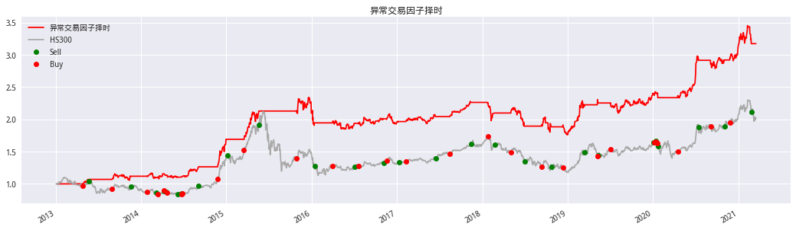
# 风险指标
Strategy_performance(algorithm_ret,'daily').style.format('{:.2%}')
| ret | |
|---|---|
| 年化收益率 | 15.72% |
| 波动率 | 14.47% |
| 夏普 | 109.78% |
| 最大回撤 | -24.75% |
# 展示交易明细
trade_info.show_all()
| 交易次数 | 28 | ||||
|---|---|---|---|---|---|
| 持仓总天数 | 1068 | ||||
| 胜率 | 60.71% | ||||
| 日胜率 | 29.15% | ||||
| 交易明细 | Buy | Sell | Hold_days | Hold_returns | |
| 0 | 2013-04-26 | 2013-05-22 | 16 | 5.47% | |
| 1 | 2013-08-29 | 2013-11-20 | 53 | 4.28% | |
| 2 | 2014-01-27 | 2014-03-06 | 24 | -2.02% | |
| 3 | 2014-03-14 | 2014-04-08 | 17 | 5.44% | |
| 4 | 2014-04-10 | 2014-04-18 | 7 | -3.85% | |
| 5 | 2014-04-21 | 2014-06-09 | 33 | -1.09% | |
| 6 | 2014-06-23 | 2014-06-24 | 2 | -0.03% | |
| 7 | 2014-06-26 | 2014-09-05 | 52 | 13.11% | |
| 8 | 2014-11-26 | 2015-01-05 | 27 | 29.82% | |
| 9 | 2015-03-18 | 2015-05-21 | 45 | 25.91% | |
| 10 | 2015-10-28 | 2016-01-14 | 56 | -10.85% | |
| 11 | 2016-03-31 | 2016-07-04 | 64 | -0.01% | |
| 12 | 2016-07-20 | 2016-11-07 | 72 | 4.24% | |
| 13 | 2016-11-17 | 2017-01-09 | 37 | -2.19% | |
| 14 | 2017-02-09 | 2017-06-15 | 86 | 3.68% | |
| 15 | 2017-08-16 | 2017-11-14 | 60 | 9.65% | |
| 16 | 2018-01-24 | 2018-02-23 | 18 | -6.13% | |
| 17 | 2018-05-04 | 2018-07-03 | 42 | -11.19% | |
| 18 | 2018-09-12 | 2018-10-23 | 24 | 0.11% | |
| 19 | 2018-12-12 | 2019-03-15 | 61 | 20.15% | |
| 20 | 2019-05-09 | 2019-05-14 | 4 | 3.58% | |
| 21 | 2019-07-03 | 2020-01-03 | 126 | 6.30% | |
| 22 | 2020-01-07 | 2020-01-13 | 5 | 0.73% | |
| 23 | 2020-01-14 | 2020-01-16 | 3 | -0.84% | |
| 24 | 2020-01-21 | 2020-01-23 | 3 | -10.55% | |
| 25 | 2020-04-16 | 2020-07-15 | 60 | 17.79% | |
| 26 | 2020-09-04 | 2020-11-03 | 37 | 1.14% | |
| 27 | 2020-11-25 | 2021-02-26 | 62 | 10.38% | |
show_worst_drawdown_periods(algorithm_ret.dropna())
fig,ax = plt.subplots(figsize=(18,4))
plot_drawdown_periods(algorithm_ret.dropna(),5,ax)
ax.plot(benchmark['close'] / benchmark['close'][0],color='darkgray')
| Worst drawdown periods | Net drawdown in % | Peak date | Valley date | Recovery date | Duration |
|---|---|---|---|---|---|
| 0 | 24.75 | 2015-12-21 | 2019-01-02 | 2019-12-27 | 1050 |
| 1 | 8.75 | 2013-09-11 | 2013-11-12 | 2014-02-13 | 112 |
| 2 | 8.11 | 2021-02-09 | 2021-02-25 | NaT | NaN |
| 3 | 7.56 | 2014-02-14 | 2014-03-19 | 2014-07-24 | 115 |
| 4 | 7.38 | 2015-11-06 | 2015-11-26 | 2015-12-18 | 31 |
[<matplotlib.lines.Line2D at 0x7fbdceab6208>]
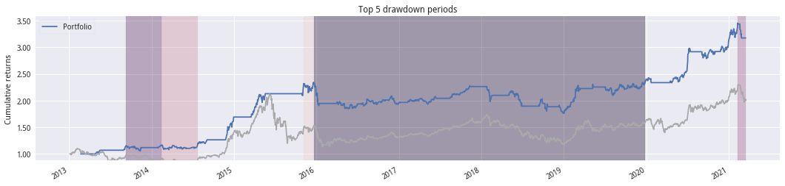
# 查看信号
fig,ax = plt.subplots(figsize=(18,4))
ax.set_title('查看最优参数下的信号')
N = grid_search.best_params_['creatSignal__creatperiod']
M = grid_search.best_params_['backtesting__window']
ser = top_ser.rolling(N).mean() - bottom_ser.rolling(N).mean()
ma = ser.rolling(M).mean()
ax.plot(ser,color='Crimson',label='signal')
ax.plot(ma,label='MA')
ax1 = ax.twinx()
ax1.plot(benchmark['close'],label='HS300',color='darkgray')
plot_trade_pos(trade_info,benchmark['close'],ax=ax1)
h1,l1 = ax.get_legend_handles_labels()
h2,l2 = ax1.get_legend_handles_labels()
ax.legend(h1+h2,l1+l2)
plt.grid(False)
<matplotlib.legend.Legend at 0x7fbdbf2d75c0>
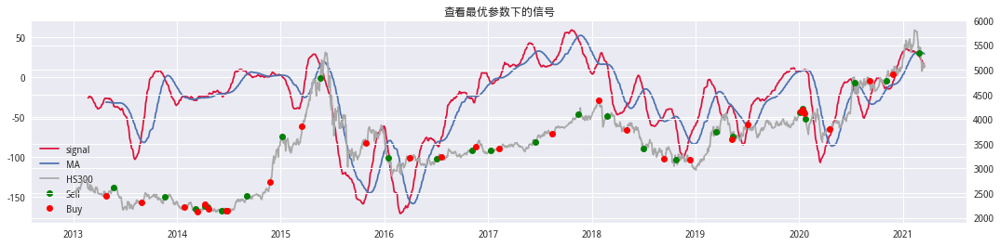
构思二：#
构建数量剪刀差_快线:因子升序分五组,头部组合数量N日移动平均-底部组合数量N日移动平均
构建数量剪刀差_慢线:因子升序分五组,头部组合数量M日移动平均-底部组合数量M日移动平均
快线与第慢均线形成双均线
其中:M>N
# 构造趋势指标构建
class creatSignal_b(TransformerMixin, BaseEstimator):
def __init__(self, longperiod: int,shortperiod:int,creatfunc:Callable)->None:
'''
createperiod:头部-顶部的数量周期
creatfunc:均线计算方法函数
'''
self.longperiod = longperiod
self.shortperiod = shortperiod
self.creatfunc = creatfunc
def fit(self, factor_df:pd.Series, returns=None):
return self
def transform(self, factor_df:pd.DataFrame)->pd.Series:
# 每日分组
rank_df = factor_df.apply(pd.cut,bins=5,labels=['G%s'%i for i in range(1,6)],axis=1)
bottom_ser = (rank_df == 'G1').sum(axis=1)
top_ser = (rank_df == 'G5').sum(axis=1)
def buildSignal(top_ser:pd.Series,bottom_ser:pd.Series,N:int)->pd.Series:
log_bottom = np.log(self.creatfunc(bottom_ser,N))
log_top = np.log(self.creatfunc(top_ser,N))
diff_signal = log_top - log_bottom # 差值
return diff_signal.dropna()
long = buildSignal(top_ser,bottom_ser,self.longperiod)
short = buildSignal(top_ser,bottom_ser,self.shortperiod)
signal = ((long - short) > 0) * 1
return signal
# 策略构建
class AlgorthmStrategy_b(BaseEstimator):
def __init__(self)->None:
pass
# 策略是如何训练的
def fit(self, signal:pd.Series, returns:pd.Series)->pd.Series:
'''
signal:信号数据
returns:收益数据
'''
idx = signal.index
# 收益率滞后一期
algorithm_ret = self.predict(signal) * returns.shift(-1).reindex(idx)
return algorithm_ret.dropna()
# 策略如何进行信号生成
def predict(self, signal:pd.Series)->pd.Series:
'''singal:信号数据'''
return signal
# 如何判断策略是优是劣质
def score(self, signal:pd.Series, returns:pd.Series)->float:
ret = self.fit(signal, returns)
# 优化指标为： 卡玛比率 + 夏普
# 分数越大越好
risk = ep.calmar_ratio(ret) + ep.sharpe_ratio(ret)
return risk
寻找最优参数#
回测
金叉买入,死叉卖出
# 回测时间设置
startDt = factor_df.index.min().strftime('%Y-%m-%d')
endDt = factor_df.index.max().strftime('%Y-%m-%d')
# 基准
benchmark = get_price('000300.XSHG',startDt,endDt,fields='close',panel=False)
returns = benchmark['close'].pct_change().reindex(factor_df.index)
# 构造PIPELINE
ivr_timing = Pipeline([('creatSignal', creatSignal_b(5,30, talib.SMA)),
('backtesting', AlgorthmStrategy_b())])
# 寻参范围设置
## 阈值
randint = st.randint(low=3, high=150)
# 超参设置
param_grid = {'creatSignal__longperiod': randint,
'creatSignal__shortperiod': randint
}
grid_search = RandomizedSearchCV(
ivr_timing, param_grid, n_iter=100, verbose=2, n_jobs=3,random_state=42)
grid_search.fit(factor_df, returns)
Fitting 3 folds for each of 100 candidates, totalling 300 fits
[CV] creatSignal__longperiod=105, creatSignal__shortperiod=95 ........
[CV] creatSignal__longperiod=105, creatSignal__shortperiod=95 ........
[CV] creatSignal__longperiod=105, creatSignal__shortperiod=95 ........
[CV] creatSignal__longperiod=105, creatSignal__shortperiod=95, total= 5.1s
[CV] creatSignal__longperiod=17, creatSignal__shortperiod=109 ........
[CV] creatSignal__longperiod=105, creatSignal__shortperiod=95, total= 5.4s
[CV] creatSignal__longperiod=17, creatSignal__shortperiod=109 ........
[CV] creatSignal__longperiod=105, creatSignal__shortperiod=95, total= 5.5s
[CV] creatSignal__longperiod=17, creatSignal__shortperiod=109 ........
[CV] creatSignal__longperiod=17, creatSignal__shortperiod=109, total= 5.1s
[CV] creatSignal__longperiod=74, creatSignal__shortperiod=23 .........
[CV] creatSignal__longperiod=17, creatSignal__shortperiod=109, total= 5.1s
[CV] creatSignal__longperiod=17, creatSignal__shortperiod=109, total= 5.0s
[CV] creatSignal__longperiod=74, creatSignal__shortperiod=23 .........
[CV] creatSignal__longperiod=74, creatSignal__shortperiod=23 .........
[CV] creatSignal__longperiod=74, creatSignal__shortperiod=23, total= 5.5s
[CV] creatSignal__longperiod=105, creatSignal__shortperiod=124 .......
[CV] creatSignal__longperiod=74, creatSignal__shortperiod=23, total= 5.5s
[CV] creatSignal__longperiod=105, creatSignal__shortperiod=124 .......
[CV] creatSignal__longperiod=74, creatSignal__shortperiod=23, total= 5.7s
[CV] creatSignal__longperiod=105, creatSignal__shortperiod=124 .......
[CV] creatSignal__longperiod=105, creatSignal__shortperiod=124, total= 5.1s
[CV] creatSignal__longperiod=77, creatSignal__shortperiod=90 .........
[CV] creatSignal__longperiod=105, creatSignal__shortperiod=124, total= 4.9s
[CV] creatSignal__longperiod=77, creatSignal__shortperiod=90 .........
[CV] creatSignal__longperiod=105, creatSignal__shortperiod=124, total= 5.2s
[CV] creatSignal__longperiod=77, creatSignal__shortperiod=90 .........
[CV] creatSignal__longperiod=77, creatSignal__shortperiod=90, total= 5.3s
[CV] creatSignal__longperiod=119, creatSignal__shortperiod=102 .......
[CV] creatSignal__longperiod=77, creatSignal__shortperiod=90, total= 5.2s
[CV] creatSignal__longperiod=119, creatSignal__shortperiod=102 .......
[CV] creatSignal__longperiod=77, creatSignal__shortperiod=90, total= 5.3s
[CV] creatSignal__longperiod=119, creatSignal__shortperiod=102 .......
[CV] creatSignal__longperiod=119, creatSignal__shortperiod=102, total= 5.5s
[CV] creatSignal__longperiod=106, creatSignal__shortperiod=133 .......
[CV] creatSignal__longperiod=119, creatSignal__shortperiod=102, total= 5.2s
[CV] creatSignal__longperiod=106, creatSignal__shortperiod=133 .......
[CV] creatSignal__longperiod=119, creatSignal__shortperiod=102, total= 5.3s
[CV] creatSignal__longperiod=106, creatSignal__shortperiod=133 .......
[CV] creatSignal__longperiod=106, creatSignal__shortperiod=133, total= 5.1s
[CV] creatSignal__longperiod=55, creatSignal__shortperiod=4 ..........
[CV] creatSignal__longperiod=106, creatSignal__shortperiod=133, total= 5.0s
[CV] creatSignal__longperiod=55, creatSignal__shortperiod=4 ..........
[CV] creatSignal__longperiod=106, creatSignal__shortperiod=133, total= 5.2s
[CV] creatSignal__longperiod=55, creatSignal__shortperiod=4 ..........
[CV] creatSignal__longperiod=55, creatSignal__shortperiod=4, total= 5.3s
[CV] creatSignal__longperiod=90, creatSignal__shortperiod=40 .........
[CV] creatSignal__longperiod=55, creatSignal__shortperiod=4, total= 5.2s
[CV] creatSignal__longperiod=90, creatSignal__shortperiod=40 .........
[CV] creatSignal__longperiod=55, creatSignal__shortperiod=4, total= 5.3s
[CV] creatSignal__longperiod=90, creatSignal__shortperiod=40 .........
[CV] creatSignal__longperiod=90, creatSignal__shortperiod=40, total= 5.3s
[CV] creatSignal__longperiod=132, creatSignal__shortperiod=23 ........
[CV] creatSignal__longperiod=90, creatSignal__shortperiod=40, total= 5.4s
[CV] creatSignal__longperiod=132, creatSignal__shortperiod=23 ........
[CV] creatSignal__longperiod=90, creatSignal__shortperiod=40, total= 5.4s
[CV] creatSignal__longperiod=132, creatSignal__shortperiod=23 ........
[CV] creatSignal__longperiod=132, creatSignal__shortperiod=23, total= 5.1s
[CV] creatSignal__longperiod=60, creatSignal__shortperiod=24 .........
[CV] creatSignal__longperiod=132, creatSignal__shortperiod=23, total= 5.1s
[CV] creatSignal__longperiod=60, creatSignal__shortperiod=24 .........
[CV] creatSignal__longperiod=132, creatSignal__shortperiod=23, total= 4.9s
[CV] creatSignal__longperiod=60, creatSignal__shortperiod=24 .........
[CV] creatSignal__longperiod=60, creatSignal__shortperiod=24, total= 5.1s
[CV] creatSignal__longperiod=91, creatSignal__shortperiod=51 .........
[CV] creatSignal__longperiod=60, creatSignal__shortperiod=24, total= 5.4s
[CV] creatSignal__longperiod=91, creatSignal__shortperiod=51 .........
[CV] creatSignal__longperiod=60, creatSignal__shortperiod=24, total= 5.4s
[CV] creatSignal__longperiod=91, creatSignal__shortperiod=51 .........
[CV] creatSignal__longperiod=91, creatSignal__shortperiod=51, total= 5.0s
[CV] creatSignal__longperiod=61, creatSignal__shortperiod=17 .........
[CV] creatSignal__longperiod=91, creatSignal__shortperiod=51, total= 5.0s
[CV] creatSignal__longperiod=61, creatSignal__shortperiod=17 .........
[Parallel(n_jobs=3)]: Done 35 tasks | elapsed: 1.8min
[CV] creatSignal__longperiod=91, creatSignal__shortperiod=51, total= 5.1s
[CV] creatSignal__longperiod=61, creatSignal__shortperiod=17 .........
[CV] creatSignal__longperiod=61, creatSignal__shortperiod=17, total= 5.0s
[CV] creatSignal__longperiod=53, creatSignal__shortperiod=110 ........
[CV] creatSignal__longperiod=61, creatSignal__shortperiod=17, total= 5.0s
[CV] creatSignal__longperiod=53, creatSignal__shortperiod=110 ........
[CV] creatSignal__longperiod=61, creatSignal__shortperiod=17, total= 5.1s
[CV] creatSignal__longperiod=53, creatSignal__shortperiod=110 ........
[CV] creatSignal__longperiod=53, creatSignal__shortperiod=110, total= 5.2s
[CV] creatSignal__longperiod=57, creatSignal__shortperiod=66 .........
[CV] creatSignal__longperiod=53, creatSignal__shortperiod=110, total= 4.9s
[CV] creatSignal__longperiod=57, creatSignal__shortperiod=66 .........
[CV] creatSignal__longperiod=53, creatSignal__shortperiod=110, total= 5.2s
[CV] creatSignal__longperiod=57, creatSignal__shortperiod=66 .........
[CV] creatSignal__longperiod=57, creatSignal__shortperiod=66, total= 5.4s
[CV] creatSignal__longperiod=133, creatSignal__shortperiod=53 ........
[CV] creatSignal__longperiod=57, creatSignal__shortperiod=66, total= 5.4s
[CV] creatSignal__longperiod=133, creatSignal__shortperiod=53 ........
[CV] creatSignal__longperiod=57, creatSignal__shortperiod=66, total= 5.2s
[CV] creatSignal__longperiod=133, creatSignal__shortperiod=53 ........
[CV] creatSignal__longperiod=133, creatSignal__shortperiod=53, total= 5.1s
[CV] creatSignal__longperiod=137, creatSignal__shortperiod=23 ........
[CV] creatSignal__longperiod=133, creatSignal__shortperiod=53, total= 5.3s
[CV] creatSignal__longperiod=137, creatSignal__shortperiod=23 ........
[CV] creatSignal__longperiod=133, creatSignal__shortperiod=53, total= 5.4s
[CV] creatSignal__longperiod=137, creatSignal__shortperiod=23 ........
[CV] creatSignal__longperiod=137, creatSignal__shortperiod=23, total= 5.0s
[CV] creatSignal__longperiod=75, creatSignal__shortperiod=20 .........
[CV] creatSignal__longperiod=137, creatSignal__shortperiod=23, total= 5.2s
[CV] creatSignal__longperiod=75, creatSignal__shortperiod=20 .........
[CV] creatSignal__longperiod=137, creatSignal__shortperiod=23, total= 5.1s
[CV] creatSignal__longperiod=75, creatSignal__shortperiod=20 .........
[CV] creatSignal__longperiod=75, creatSignal__shortperiod=20, total= 5.0s
[CV] creatSignal__longperiod=134, creatSignal__shortperiod=91 ........
[CV] creatSignal__longperiod=75, creatSignal__shortperiod=20, total= 5.0s
[CV] creatSignal__longperiod=134, creatSignal__shortperiod=91 ........
[CV] creatSignal__longperiod=75, creatSignal__shortperiod=20, total= 5.0s
[CV] creatSignal__longperiod=134, creatSignal__shortperiod=91 ........
[CV] creatSignal__longperiod=134, creatSignal__shortperiod=91, total= 5.1s
[CV] creatSignal__longperiod=62, creatSignal__shortperiod=16 .........
[CV] creatSignal__longperiod=134, creatSignal__shortperiod=91, total= 5.3s
[CV] creatSignal__longperiod=62, creatSignal__shortperiod=16 .........
[CV] creatSignal__longperiod=134, creatSignal__shortperiod=91, total= 5.2s
[CV] creatSignal__longperiod=62, creatSignal__shortperiod=16 .........
[CV] creatSignal__longperiod=62, creatSignal__shortperiod=16, total= 5.2s
[CV] creatSignal__longperiod=11, creatSignal__shortperiod=92 .........
[CV] creatSignal__longperiod=62, creatSignal__shortperiod=16, total= 5.1s
[CV] creatSignal__longperiod=11, creatSignal__shortperiod=92 .........
[CV] creatSignal__longperiod=62, creatSignal__shortperiod=16, total= 5.2s
[CV] creatSignal__longperiod=11, creatSignal__shortperiod=92 .........
[CV] creatSignal__longperiod=11, creatSignal__shortperiod=92, total= 5.2s
[CV] creatSignal__longperiod=55, creatSignal__shortperiod=132 ........
[CV] creatSignal__longperiod=11, creatSignal__shortperiod=92, total= 5.1s
[CV] creatSignal__longperiod=55, creatSignal__shortperiod=132 ........
[CV] creatSignal__longperiod=11, creatSignal__shortperiod=92, total= 5.2s
[CV] creatSignal__longperiod=55, creatSignal__shortperiod=132 ........
[CV] creatSignal__longperiod=55, creatSignal__shortperiod=132, total= 5.1s
[CV] creatSignal__longperiod=86, creatSignal__shortperiod=94 .........
[CV] creatSignal__longperiod=55, creatSignal__shortperiod=132, total= 5.1s
[CV] creatSignal__longperiod=86, creatSignal__shortperiod=94 .........
[CV] creatSignal__longperiod=55, creatSignal__shortperiod=132, total= 5.2s
[CV] creatSignal__longperiod=86, creatSignal__shortperiod=94 .........
[CV] creatSignal__longperiod=86, creatSignal__shortperiod=94, total= 5.2s
[CV] creatSignal__longperiod=113, creatSignal__shortperiod=10 ........
[CV] creatSignal__longperiod=86, creatSignal__shortperiod=94, total= 5.1s
[CV] creatSignal__longperiod=113, creatSignal__shortperiod=10 ........
[CV] creatSignal__longperiod=86, creatSignal__shortperiod=94, total= 5.0s
[CV] creatSignal__longperiod=113, creatSignal__shortperiod=10 ........
[CV] creatSignal__longperiod=113, creatSignal__shortperiod=10, total= 5.0s
[CV] creatSignal__longperiod=37, creatSignal__shortperiod=83 .........
[CV] creatSignal__longperiod=113, creatSignal__shortperiod=10, total= 5.5s
[CV] creatSignal__longperiod=37, creatSignal__shortperiod=83 .........
[CV] creatSignal__longperiod=113, creatSignal__shortperiod=10, total= 5.2s
[CV] creatSignal__longperiod=37, creatSignal__shortperiod=83 .........
[CV] creatSignal__longperiod=37, creatSignal__shortperiod=83, total= 5.1s
[CV] creatSignal__longperiod=52, creatSignal__shortperiod=106 ........
[CV] creatSignal__longperiod=37, creatSignal__shortperiod=83, total= 5.1s
[CV] creatSignal__longperiod=52, creatSignal__shortperiod=106 ........
[CV] creatSignal__longperiod=37, creatSignal__shortperiod=83, total= 5.0s
[CV] creatSignal__longperiod=52, creatSignal__shortperiod=106 ........
[CV] creatSignal__longperiod=52, creatSignal__shortperiod=106, total= 5.1s
[CV] creatSignal__longperiod=134, creatSignal__shortperiod=4 .........
[CV] creatSignal__longperiod=52, creatSignal__shortperiod=106, total= 5.2s
[CV] creatSignal__longperiod=134, creatSignal__shortperiod=4 .........
[CV] creatSignal__longperiod=52, creatSignal__shortperiod=106, total= 5.1s
[CV] creatSignal__longperiod=134, creatSignal__shortperiod=4 .........
[CV] creatSignal__longperiod=134, creatSignal__shortperiod=4, total= 5.4s
[CV] creatSignal__longperiod=136, creatSignal__shortperiod=56 ........
[CV] creatSignal__longperiod=134, creatSignal__shortperiod=4, total= 5.1s
[CV] creatSignal__longperiod=136, creatSignal__shortperiod=56 ........
[CV] creatSignal__longperiod=134, creatSignal__shortperiod=4, total= 5.2s
[CV] creatSignal__longperiod=136, creatSignal__shortperiod=56 ........
[CV] creatSignal__longperiod=136, creatSignal__shortperiod=56, total= 5.1s
[CV] creatSignal__longperiod=108, creatSignal__shortperiod=6 .........
[CV] creatSignal__longperiod=136, creatSignal__shortperiod=56, total= 4.9s
[CV] creatSignal__longperiod=108, creatSignal__shortperiod=6 .........
[CV] creatSignal__longperiod=136, creatSignal__shortperiod=56, total= 4.9s
[CV] creatSignal__longperiod=108, creatSignal__shortperiod=6 .........
[CV] creatSignal__longperiod=108, creatSignal__shortperiod=6, total= 5.0s
[CV] creatSignal__longperiod=56, creatSignal__shortperiod=148 ........
[CV] creatSignal__longperiod=108, creatSignal__shortperiod=6, total= 4.9s
[CV] creatSignal__longperiod=56, creatSignal__shortperiod=148 ........
[CV] creatSignal__longperiod=108, creatSignal__shortperiod=6, total= 5.0s
[CV] creatSignal__longperiod=56, creatSignal__shortperiod=148 ........
[CV] creatSignal__longperiod=56, creatSignal__shortperiod=148, total= 5.2s
[CV] creatSignal__longperiod=46, creatSignal__shortperiod=16 .........
[CV] creatSignal__longperiod=56, creatSignal__shortperiod=148, total= 5.1s
[CV] creatSignal__longperiod=46, creatSignal__shortperiod=16 .........
[CV] creatSignal__longperiod=56, creatSignal__shortperiod=148, total= 5.4s
[CV] creatSignal__longperiod=46, creatSignal__shortperiod=16 .........
[CV] creatSignal__longperiod=46, creatSignal__shortperiod=16, total= 5.1s
[CV] creatSignal__longperiod=97, creatSignal__shortperiod=50 .........
[CV] creatSignal__longperiod=46, creatSignal__shortperiod=16, total= 4.9s
[CV] creatSignal__longperiod=97, creatSignal__shortperiod=50 .........
[CV] creatSignal__longperiod=46, creatSignal__shortperiod=16, total= 5.2s
[CV] creatSignal__longperiod=97, creatSignal__shortperiod=50 .........
[CV] creatSignal__longperiod=97, creatSignal__shortperiod=50, total= 5.3s
[CV] creatSignal__longperiod=17, creatSignal__shortperiod=42 .........
[CV] creatSignal__longperiod=97, creatSignal__shortperiod=50, total= 5.0s
[CV] creatSignal__longperiod=17, creatSignal__shortperiod=42 .........
[CV] creatSignal__longperiod=97, creatSignal__shortperiod=50, total= 5.0s
[CV] creatSignal__longperiod=17, creatSignal__shortperiod=42 .........
[CV] creatSignal__longperiod=17, creatSignal__shortperiod=42, total= 4.9s
[CV] creatSignal__longperiod=84, creatSignal__shortperiod=113 ........
[CV] creatSignal__longperiod=17, creatSignal__shortperiod=42, total= 4.7s
[CV] creatSignal__longperiod=84, creatSignal__shortperiod=113 ........
[CV] creatSignal__longperiod=17, creatSignal__shortperiod=42, total= 4.9s
[CV] creatSignal__longperiod=84, creatSignal__shortperiod=113 ........
[CV] creatSignal__longperiod=84, creatSignal__shortperiod=113, total= 5.0s
[CV] creatSignal__longperiod=55, creatSignal__shortperiod=26 .........
[CV] creatSignal__longperiod=84, creatSignal__shortperiod=113, total= 5.0s
[CV] creatSignal__longperiod=55, creatSignal__shortperiod=26 .........
[CV] creatSignal__longperiod=84, creatSignal__shortperiod=113, total= 5.0s
[CV] creatSignal__longperiod=55, creatSignal__shortperiod=26 .........
[CV] creatSignal__longperiod=55, creatSignal__shortperiod=26, total= 5.6s
[CV] creatSignal__longperiod=126, creatSignal__shortperiod=43 ........
[CV] creatSignal__longperiod=55, creatSignal__shortperiod=26, total= 4.9s
[CV] creatSignal__longperiod=126, creatSignal__shortperiod=43 ........
[CV] creatSignal__longperiod=55, creatSignal__shortperiod=26, total= 5.4s
[CV] creatSignal__longperiod=126, creatSignal__shortperiod=43 ........
[CV] creatSignal__longperiod=126, creatSignal__shortperiod=43, total= 4.9s
[CV] creatSignal__longperiod=17, creatSignal__shortperiod=47 .........
[CV] creatSignal__longperiod=126, creatSignal__shortperiod=43, total= 5.2s
[CV] creatSignal__longperiod=17, creatSignal__shortperiod=47 .........
[CV] creatSignal__longperiod=126, creatSignal__shortperiod=43, total= 5.2s
[CV] creatSignal__longperiod=17, creatSignal__shortperiod=47 .........
[CV] creatSignal__longperiod=17, creatSignal__shortperiod=47, total= 5.0s
[CV] creatSignal__longperiod=67, creatSignal__shortperiod=91 .........
[CV] creatSignal__longperiod=17, creatSignal__shortperiod=47, total= 5.3s
[CV] creatSignal__longperiod=67, creatSignal__shortperiod=91 .........
[CV] creatSignal__longperiod=17, creatSignal__shortperiod=47, total= 5.3s
[CV] creatSignal__longperiod=67, creatSignal__shortperiod=91 .........
[CV] creatSignal__longperiod=67, creatSignal__shortperiod=91, total= 5.3s
[CV] creatSignal__longperiod=73, creatSignal__shortperiod=11 .........
[CV] creatSignal__longperiod=67, creatSignal__shortperiod=91, total= 5.3s
[CV] creatSignal__longperiod=73, creatSignal__shortperiod=11 .........
[CV] creatSignal__longperiod=67, creatSignal__shortperiod=91, total= 5.4s
[CV] creatSignal__longperiod=73, creatSignal__shortperiod=11 .........
[CV] creatSignal__longperiod=73, creatSignal__shortperiod=11, total= 5.2s
[CV] creatSignal__longperiod=90, creatSignal__shortperiod=131 ........
[CV] creatSignal__longperiod=73, creatSignal__shortperiod=11, total= 5.1s
[CV] creatSignal__longperiod=90, creatSignal__shortperiod=131 ........
[CV] creatSignal__longperiod=73, creatSignal__shortperiod=11, total= 5.1s
[CV] creatSignal__longperiod=90, creatSignal__shortperiod=131 ........
[CV] creatSignal__longperiod=90, creatSignal__shortperiod=131, total= 5.3s
[CV] creatSignal__longperiod=138, creatSignal__shortperiod=65 ........
[CV] creatSignal__longperiod=90, creatSignal__shortperiod=131, total= 5.4s
[CV] creatSignal__longperiod=138, creatSignal__shortperiod=65 ........
[CV] creatSignal__longperiod=90, creatSignal__shortperiod=131, total= 5.1s
[CV] creatSignal__longperiod=138, creatSignal__shortperiod=65 ........
[CV] creatSignal__longperiod=138, creatSignal__shortperiod=65, total= 5.4s
[CV] creatSignal__longperiod=141, creatSignal__shortperiod=83 ........
[CV] creatSignal__longperiod=138, creatSignal__shortperiod=65, total= 5.0s
[CV] creatSignal__longperiod=141, creatSignal__shortperiod=83 ........
[CV] creatSignal__longperiod=138, creatSignal__shortperiod=65, total= 5.1s
[CV] creatSignal__longperiod=141, creatSignal__shortperiod=83 ........
[CV] creatSignal__longperiod=141, creatSignal__shortperiod=83, total= 4.9s
[CV] creatSignal__longperiod=138, creatSignal__shortperiod=35 ........
[CV] creatSignal__longperiod=141, creatSignal__shortperiod=83, total= 5.2s
[CV] creatSignal__longperiod=138, creatSignal__shortperiod=35 ........
[CV] creatSignal__longperiod=141, creatSignal__shortperiod=83, total= 5.3s
[CV] creatSignal__longperiod=138, creatSignal__shortperiod=35 ........
[CV] creatSignal__longperiod=138, creatSignal__shortperiod=35, total= 4.9s
[CV] creatSignal__longperiod=125, creatSignal__shortperiod=7 .........
[CV] creatSignal__longperiod=138, creatSignal__shortperiod=35, total= 5.2s
[CV] creatSignal__longperiod=125, creatSignal__shortperiod=7 .........
[CV] creatSignal__longperiod=138, creatSignal__shortperiod=35, total= 5.3s
[CV] creatSignal__longperiod=125, creatSignal__shortperiod=7 .........
[CV] creatSignal__longperiod=125, creatSignal__shortperiod=7, total= 5.1s
[CV] creatSignal__longperiod=43, creatSignal__shortperiod=30 .........
[CV] creatSignal__longperiod=125, creatSignal__shortperiod=7, total= 5.0s
[CV] creatSignal__longperiod=43, creatSignal__shortperiod=30 .........
[CV] creatSignal__longperiod=125, creatSignal__shortperiod=7, total= 5.0s
[CV] creatSignal__longperiod=43, creatSignal__shortperiod=30 .........
[CV] creatSignal__longperiod=43, creatSignal__shortperiod=30, total= 5.0s
[CV] creatSignal__longperiod=137, creatSignal__shortperiod=74 ........
[CV] creatSignal__longperiod=43, creatSignal__shortperiod=30, total= 4.9s
[CV] creatSignal__longperiod=137, creatSignal__shortperiod=74 ........
[CV] creatSignal__longperiod=43, creatSignal__shortperiod=30, total= 5.0s
[CV] creatSignal__longperiod=137, creatSignal__shortperiod=74 ........
[CV] creatSignal__longperiod=137, creatSignal__shortperiod=74, total= 5.3s
[CV] creatSignal__longperiod=14, creatSignal__shortperiod=35 .........
[CV] creatSignal__longperiod=137, creatSignal__shortperiod=74, total= 5.4s
[CV] creatSignal__longperiod=14, creatSignal__shortperiod=35 .........
[CV] creatSignal__longperiod=137, creatSignal__shortperiod=74, total= 5.6s
[CV] creatSignal__longperiod=14, creatSignal__shortperiod=35 .........
[CV] creatSignal__longperiod=14, creatSignal__shortperiod=35, total= 5.7s
[CV] creatSignal__longperiod=50, creatSignal__shortperiod=64 .........
[CV] creatSignal__longperiod=14, creatSignal__shortperiod=35, total= 5.8s
[CV] creatSignal__longperiod=50, creatSignal__shortperiod=64 .........
[CV] creatSignal__longperiod=14, creatSignal__shortperiod=35, total= 5.7s
[CV] creatSignal__longperiod=50, creatSignal__shortperiod=64 .........
[CV] creatSignal__longperiod=50, creatSignal__shortperiod=64, total= 5.3s
[CV] creatSignal__longperiod=39, creatSignal__shortperiod=101 ........
[CV] creatSignal__longperiod=50, creatSignal__shortperiod=64, total= 4.9s
[CV] creatSignal__longperiod=39, creatSignal__shortperiod=101 ........
[CV] creatSignal__longperiod=50, creatSignal__shortperiod=64, total= 5.2s
[CV] creatSignal__longperiod=39, creatSignal__shortperiod=101 ........
[CV] creatSignal__longperiod=39, creatSignal__shortperiod=101, total= 6.6s
[CV] creatSignal__longperiod=106, creatSignal__shortperiod=37 ........
[CV] creatSignal__longperiod=39, creatSignal__shortperiod=101, total= 6.5s
[CV] creatSignal__longperiod=106, creatSignal__shortperiod=37 ........
[CV] creatSignal__longperiod=39, creatSignal__shortperiod=101, total= 6.7s
[CV] creatSignal__longperiod=106, creatSignal__shortperiod=37 ........
[CV] creatSignal__longperiod=106, creatSignal__shortperiod=37, total= 6.8s
[CV] creatSignal__longperiod=103, creatSignal__shortperiod=133 .......
[CV] creatSignal__longperiod=106, creatSignal__shortperiod=37, total= 6.7s
[CV] creatSignal__longperiod=103, creatSignal__shortperiod=133 .......
[CV] creatSignal__longperiod=106, creatSignal__shortperiod=37, total= 6.9s
[CV] creatSignal__longperiod=103, creatSignal__shortperiod=133 .......
[CV] creatSignal__longperiod=103, creatSignal__shortperiod=133, total= 6.9s
[CV] creatSignal__longperiod=3, creatSignal__shortperiod=7 ...........
[CV] creatSignal__longperiod=103, creatSignal__shortperiod=133, total= 6.8s
[CV] creatSignal__longperiod=3, creatSignal__shortperiod=7 ...........
[CV] creatSignal__longperiod=103, creatSignal__shortperiod=133, total= 7.0s
[CV] creatSignal__longperiod=3, creatSignal__shortperiod=7 ...........
[CV] creatSignal__longperiod=3, creatSignal__shortperiod=7, total= 6.7s
[CV] creatSignal__longperiod=144, creatSignal__shortperiod=105 .......
[CV] creatSignal__longperiod=3, creatSignal__shortperiod=7, total= 6.6s
[CV] creatSignal__longperiod=144, creatSignal__shortperiod=105 .......
[CV] creatSignal__longperiod=3, creatSignal__shortperiod=7, total= 6.7s
[CV] creatSignal__longperiod=144, creatSignal__shortperiod=105 .......
[Parallel(n_jobs=3)]: Done 156 tasks | elapsed: 7.7min
[CV] creatSignal__longperiod=144, creatSignal__shortperiod=105, total= 6.9s
[CV] creatSignal__longperiod=29, creatSignal__shortperiod=139 ........
[CV] creatSignal__longperiod=144, creatSignal__shortperiod=105, total= 7.1s
[CV] creatSignal__longperiod=29, creatSignal__shortperiod=139 ........
[CV] creatSignal__longperiod=144, creatSignal__shortperiod=105, total= 6.8s
[CV] creatSignal__longperiod=29, creatSignal__shortperiod=139 ........
[CV] creatSignal__longperiod=29, creatSignal__shortperiod=139, total= 7.0s
[CV] creatSignal__longperiod=17, creatSignal__shortperiod=92 .........
[CV] creatSignal__longperiod=29, creatSignal__shortperiod=139, total= 7.1s
[CV] creatSignal__longperiod=17, creatSignal__shortperiod=92 .........
[CV] creatSignal__longperiod=29, creatSignal__shortperiod=139, total= 7.1s
[CV] creatSignal__longperiod=17, creatSignal__shortperiod=92 .........
[CV] creatSignal__longperiod=17, creatSignal__shortperiod=92, total= 7.2s
[CV] creatSignal__longperiod=44, creatSignal__shortperiod=126 ........
[CV] creatSignal__longperiod=17, creatSignal__shortperiod=92, total= 6.7s
[CV] creatSignal__longperiod=44, creatSignal__shortperiod=126 ........
[CV] creatSignal__longperiod=17, creatSignal__shortperiod=92, total= 7.1s
[CV] creatSignal__longperiod=44, creatSignal__shortperiod=126 ........
[CV] creatSignal__longperiod=44, creatSignal__shortperiod=126, total= 7.0s
[CV] creatSignal__longperiod=65, creatSignal__shortperiod=98 .........
[CV] creatSignal__longperiod=44, creatSignal__shortperiod=126, total= 6.9s
[CV] creatSignal__longperiod=65, creatSignal__shortperiod=98 .........
[CV] creatSignal__longperiod=44, creatSignal__shortperiod=126, total= 6.9s
[CV] creatSignal__longperiod=65, creatSignal__shortperiod=98 .........
[CV] creatSignal__longperiod=65, creatSignal__shortperiod=98, total= 6.7s
[CV] creatSignal__longperiod=54, creatSignal__shortperiod=98 .........
[CV] creatSignal__longperiod=65, creatSignal__shortperiod=98, total= 6.7s
[CV] creatSignal__longperiod=54, creatSignal__shortperiod=98 .........
[CV] creatSignal__longperiod=65, creatSignal__shortperiod=98, total= 6.7s
[CV] creatSignal__longperiod=54, creatSignal__shortperiod=98 .........
[CV] creatSignal__longperiod=54, creatSignal__shortperiod=98, total= 6.6s
[CV] creatSignal__longperiod=134, creatSignal__shortperiod=145 .......
[CV] creatSignal__longperiod=54, creatSignal__shortperiod=98, total= 6.7s
[CV] creatSignal__longperiod=134, creatSignal__shortperiod=145 .......
[CV] creatSignal__longperiod=54, creatSignal__shortperiod=98, total= 6.9s
[CV] creatSignal__longperiod=134, creatSignal__shortperiod=145 .......
[CV] creatSignal__longperiod=134, creatSignal__shortperiod=145, total= 7.1s
[CV] creatSignal__longperiod=31, creatSignal__shortperiod=38 .........
[CV] creatSignal__longperiod=134, creatSignal__shortperiod=145, total= 7.1s
[CV] creatSignal__longperiod=31, creatSignal__shortperiod=38 .........
[CV] creatSignal__longperiod=134, creatSignal__shortperiod=145, total= 6.9s
[CV] creatSignal__longperiod=31, creatSignal__shortperiod=38 .........
[CV] creatSignal__longperiod=31, creatSignal__shortperiod=38, total= 6.7s
[CV] creatSignal__longperiod=15, creatSignal__shortperiod=73 .........
[CV] creatSignal__longperiod=31, creatSignal__shortperiod=38, total= 6.6s
[CV] creatSignal__longperiod=15, creatSignal__shortperiod=73 .........
[CV] creatSignal__longperiod=31, creatSignal__shortperiod=38, total= 6.8s
[CV] creatSignal__longperiod=15, creatSignal__shortperiod=73 .........
[CV] creatSignal__longperiod=15, creatSignal__shortperiod=73, total= 6.9s
[CV] creatSignal__longperiod=88, creatSignal__shortperiod=30 .........
[CV] creatSignal__longperiod=15, creatSignal__shortperiod=73, total= 6.9s
[CV] creatSignal__longperiod=88, creatSignal__shortperiod=30 .........
[CV] creatSignal__longperiod=15, creatSignal__shortperiod=73, total= 6.6s
[CV] creatSignal__longperiod=88, creatSignal__shortperiod=30 .........
[CV] creatSignal__longperiod=88, creatSignal__shortperiod=30, total= 7.1s
[CV] creatSignal__longperiod=68, creatSignal__shortperiod=47 .........
[CV] creatSignal__longperiod=88, creatSignal__shortperiod=30, total= 6.9s
[CV] creatSignal__longperiod=68, creatSignal__shortperiod=47 .........
[CV] creatSignal__longperiod=88, creatSignal__shortperiod=30, total= 6.9s
[CV] creatSignal__longperiod=68, creatSignal__shortperiod=47 .........
[CV] creatSignal__longperiod=68, creatSignal__shortperiod=47, total= 7.0s
[CV] creatSignal__longperiod=64, creatSignal__shortperiod=136 ........
[CV] creatSignal__longperiod=68, creatSignal__shortperiod=47, total= 6.9s
[CV] creatSignal__longperiod=64, creatSignal__shortperiod=136 ........
[CV] creatSignal__longperiod=68, creatSignal__shortperiod=47, total= 7.0s
[CV] creatSignal__longperiod=64, creatSignal__shortperiod=136 ........
[CV] creatSignal__longperiod=64, creatSignal__shortperiod=136, total= 7.0s
[CV] creatSignal__longperiod=30, creatSignal__shortperiod=30 .........
[CV] creatSignal__longperiod=64, creatSignal__shortperiod=136, total= 6.9s
[CV] creatSignal__longperiod=30, creatSignal__shortperiod=30 .........
[CV] creatSignal__longperiod=64, creatSignal__shortperiod=136, total= 7.0s
[CV] creatSignal__longperiod=30, creatSignal__shortperiod=30 .........
[CV] creatSignal__longperiod=30, creatSignal__shortperiod=30, total= 6.8s
[CV] creatSignal__longperiod=110, creatSignal__shortperiod=46 ........
[CV] creatSignal__longperiod=30, creatSignal__shortperiod=30, total= 6.7s
[CV] creatSignal__longperiod=110, creatSignal__shortperiod=46 ........
[CV] creatSignal__longperiod=30, creatSignal__shortperiod=30, total= 6.8s
[CV] creatSignal__longperiod=110, creatSignal__shortperiod=46 ........
[CV] creatSignal__longperiod=110, creatSignal__shortperiod=46, total= 6.7s
[CV] creatSignal__longperiod=86, creatSignal__shortperiod=32 .........
[CV] creatSignal__longperiod=110, creatSignal__shortperiod=46, total= 6.7s
[CV] creatSignal__longperiod=86, creatSignal__shortperiod=32 .........
[CV] creatSignal__longperiod=110, creatSignal__shortperiod=46, total= 6.6s
[CV] creatSignal__longperiod=86, creatSignal__shortperiod=32 .........
[CV] creatSignal__longperiod=86, creatSignal__shortperiod=32, total= 5.8s
[CV] creatSignal__longperiod=77, creatSignal__shortperiod=130 ........
[CV] creatSignal__longperiod=86, creatSignal__shortperiod=32, total= 5.7s
[CV] creatSignal__longperiod=77, creatSignal__shortperiod=130 ........
[CV] creatSignal__longperiod=86, creatSignal__shortperiod=32, total= 5.7s
[CV] creatSignal__longperiod=77, creatSignal__shortperiod=130 ........
[CV] creatSignal__longperiod=77, creatSignal__shortperiod=130, total= 5.1s
[CV] creatSignal__longperiod=94, creatSignal__shortperiod=131 ........
[CV] creatSignal__longperiod=77, creatSignal__shortperiod=130, total= 4.9s
[CV] creatSignal__longperiod=94, creatSignal__shortperiod=131 ........
[CV] creatSignal__longperiod=77, creatSignal__shortperiod=130, total= 4.9s
[CV] creatSignal__longperiod=94, creatSignal__shortperiod=131 ........
[CV] creatSignal__longperiod=94, creatSignal__shortperiod=131, total= 5.0s
[CV] creatSignal__longperiod=123, creatSignal__shortperiod=29 ........
[CV] creatSignal__longperiod=94, creatSignal__shortperiod=131, total= 4.9s
[CV] creatSignal__longperiod=123, creatSignal__shortperiod=29 ........
[CV] creatSignal__longperiod=94, creatSignal__shortperiod=131, total= 4.9s
[CV] creatSignal__longperiod=123, creatSignal__shortperiod=29 ........
[CV] creatSignal__longperiod=123, creatSignal__shortperiod=29, total= 5.1s
[CV] creatSignal__longperiod=123, creatSignal__shortperiod=118 .......
[CV] creatSignal__longperiod=123, creatSignal__shortperiod=29, total= 5.6s
[CV] creatSignal__longperiod=123, creatSignal__shortperiod=118 .......
[CV] creatSignal__longperiod=123, creatSignal__shortperiod=29, total= 5.4s
[CV] creatSignal__longperiod=123, creatSignal__shortperiod=118 .......
[CV] creatSignal__longperiod=123, creatSignal__shortperiod=118, total= 5.6s
[CV] creatSignal__longperiod=5, creatSignal__shortperiod=105 .........
[CV] creatSignal__longperiod=123, creatSignal__shortperiod=118, total= 5.4s
[CV] creatSignal__longperiod=5, creatSignal__shortperiod=105 .........
[CV] creatSignal__longperiod=123, creatSignal__shortperiod=118, total= 5.7s
[CV] creatSignal__longperiod=5, creatSignal__shortperiod=105 .........
[CV] creatSignal__longperiod=5, creatSignal__shortperiod=105, total= 5.2s
[CV] creatSignal__longperiod=139, creatSignal__shortperiod=64 ........
[CV] creatSignal__longperiod=5, creatSignal__shortperiod=105, total= 5.1s
[CV] creatSignal__longperiod=139, creatSignal__shortperiod=64 ........
[CV] creatSignal__longperiod=5, creatSignal__shortperiod=105, total= 5.4s
[CV] creatSignal__longperiod=139, creatSignal__shortperiod=64 ........
[CV] creatSignal__longperiod=139, creatSignal__shortperiod=64, total= 5.1s
[CV] creatSignal__longperiod=53, creatSignal__shortperiod=61 .........
[CV] creatSignal__longperiod=139, creatSignal__shortperiod=64, total= 4.8s
[CV] creatSignal__longperiod=53, creatSignal__shortperiod=61 .........
[CV] creatSignal__longperiod=139, creatSignal__shortperiod=64, total= 5.0s
[CV] creatSignal__longperiod=53, creatSignal__shortperiod=61 .........
[CV] creatSignal__longperiod=53, creatSignal__shortperiod=61, total= 5.1s
[CV] creatSignal__longperiod=120, creatSignal__shortperiod=98 ........
[CV] creatSignal__longperiod=53, creatSignal__shortperiod=61, total= 5.2s
[CV] creatSignal__longperiod=120, creatSignal__shortperiod=98 ........
[CV] creatSignal__longperiod=53, creatSignal__shortperiod=61, total= 5.2s
[CV] creatSignal__longperiod=120, creatSignal__shortperiod=98 ........
[CV] creatSignal__longperiod=120, creatSignal__shortperiod=98, total= 5.2s
[CV] creatSignal__longperiod=115, creatSignal__shortperiod=64 ........
[CV] creatSignal__longperiod=120, creatSignal__shortperiod=98, total= 5.3s
[CV] creatSignal__longperiod=115, creatSignal__shortperiod=64 ........
[CV] creatSignal__longperiod=120, creatSignal__shortperiod=98, total= 5.3s
[CV] creatSignal__longperiod=115, creatSignal__shortperiod=64 ........
[CV] creatSignal__longperiod=115, creatSignal__shortperiod=64, total= 4.9s
[CV] creatSignal__longperiod=54, creatSignal__shortperiod=14 .........
[CV] creatSignal__longperiod=115, creatSignal__shortperiod=64, total= 5.3s
[CV] creatSignal__longperiod=54, creatSignal__shortperiod=14 .........
[CV] creatSignal__longperiod=115, creatSignal__shortperiod=64, total= 4.9s
[CV] creatSignal__longperiod=54, creatSignal__shortperiod=14 .........
[CV] creatSignal__longperiod=54, creatSignal__shortperiod=14, total= 4.8s
[CV] creatSignal__longperiod=41, creatSignal__shortperiod=132 ........
[CV] creatSignal__longperiod=54, creatSignal__shortperiod=14, total= 5.2s
[CV] creatSignal__longperiod=41, creatSignal__shortperiod=132 ........
[CV] creatSignal__longperiod=54, creatSignal__shortperiod=14, total= 5.1s
[CV] creatSignal__longperiod=41, creatSignal__shortperiod=132 ........
[CV] creatSignal__longperiod=41, creatSignal__shortperiod=132, total= 5.3s
[CV] creatSignal__longperiod=133, creatSignal__shortperiod=115 .......
[CV] creatSignal__longperiod=41, creatSignal__shortperiod=132, total= 5.2s
[CV] creatSignal__longperiod=133, creatSignal__shortperiod=115 .......
[CV] creatSignal__longperiod=41, creatSignal__shortperiod=132, total= 5.5s
[CV] creatSignal__longperiod=133, creatSignal__shortperiod=115 .......
[CV] creatSignal__longperiod=133, creatSignal__shortperiod=115, total= 5.3s
[CV] creatSignal__longperiod=103, creatSignal__shortperiod=115 .......
[CV] creatSignal__longperiod=133, creatSignal__shortperiod=115, total= 5.3s
[CV] creatSignal__longperiod=103, creatSignal__shortperiod=115 .......
[CV] creatSignal__longperiod=133, creatSignal__shortperiod=115, total= 5.4s
[CV] creatSignal__longperiod=103, creatSignal__shortperiod=115 .......
[CV] creatSignal__longperiod=103, creatSignal__shortperiod=115, total= 5.1s
[CV] creatSignal__longperiod=83, creatSignal__shortperiod=115 ........
[CV] creatSignal__longperiod=103, creatSignal__shortperiod=115, total= 5.2s
[CV] creatSignal__longperiod=83, creatSignal__shortperiod=115 ........
[CV] creatSignal__longperiod=103, creatSignal__shortperiod=115, total= 5.1s
[CV] creatSignal__longperiod=83, creatSignal__shortperiod=115 ........
[CV] creatSignal__longperiod=83, creatSignal__shortperiod=115, total= 5.1s
[CV] creatSignal__longperiod=4, creatSignal__shortperiod=132 .........
[CV] creatSignal__longperiod=83, creatSignal__shortperiod=115, total= 5.0s
[CV] creatSignal__longperiod=4, creatSignal__shortperiod=132 .........
[CV] creatSignal__longperiod=83, creatSignal__shortperiod=115, total= 5.0s
[CV] creatSignal__longperiod=4, creatSignal__shortperiod=132 .........
[CV] creatSignal__longperiod=4, creatSignal__shortperiod=132, total= 5.1s
[CV] creatSignal__longperiod=56, creatSignal__shortperiod=89 .........
[CV] creatSignal__longperiod=4, creatSignal__shortperiod=132, total= 4.9s
[CV] creatSignal__longperiod=56, creatSignal__shortperiod=89 .........
[CV] creatSignal__longperiod=4, creatSignal__shortperiod=132, total= 5.0s
[CV] creatSignal__longperiod=56, creatSignal__shortperiod=89 .........
[CV] creatSignal__longperiod=56, creatSignal__shortperiod=89, total= 5.4s
[CV] creatSignal__longperiod=131, creatSignal__shortperiod=149 .......
[CV] creatSignal__longperiod=56, creatSignal__shortperiod=89, total= 5.0s
[CV] creatSignal__longperiod=131, creatSignal__shortperiod=149 .......
[CV] creatSignal__longperiod=56, creatSignal__shortperiod=89, total= 5.1s
[CV] creatSignal__longperiod=131, creatSignal__shortperiod=149 .......
[CV] creatSignal__longperiod=131, creatSignal__shortperiod=149, total= 4.9s
[CV] creatSignal__longperiod=128, creatSignal__shortperiod=132 .......
[CV] creatSignal__longperiod=131, creatSignal__shortperiod=149, total= 5.3s
[CV] creatSignal__longperiod=128, creatSignal__shortperiod=132 .......
[CV] creatSignal__longperiod=131, creatSignal__shortperiod=149, total= 5.0s
[CV] creatSignal__longperiod=128, creatSignal__shortperiod=132 .......
[CV] creatSignal__longperiod=128, creatSignal__shortperiod=132, total= 5.0s
[CV] creatSignal__longperiod=55, creatSignal__shortperiod=70 .........
[CV] creatSignal__longperiod=128, creatSignal__shortperiod=132, total= 5.0s
[CV] creatSignal__longperiod=55, creatSignal__shortperiod=70 .........
[CV] creatSignal__longperiod=128, creatSignal__shortperiod=132, total= 4.9s
[CV] creatSignal__longperiod=55, creatSignal__shortperiod=70 .........
[CV] creatSignal__longperiod=55, creatSignal__shortperiod=70, total= 5.1s
[CV] creatSignal__longperiod=125, creatSignal__shortperiod=147 .......
[CV] creatSignal__longperiod=55, creatSignal__shortperiod=70, total= 5.1s
[CV] creatSignal__longperiod=125, creatSignal__shortperiod=147 .......
[CV] creatSignal__longperiod=55, creatSignal__shortperiod=70, total= 5.2s
[CV] creatSignal__longperiod=125, creatSignal__shortperiod=147 .......
[CV] creatSignal__longperiod=125, creatSignal__shortperiod=147, total= 5.3s
[CV] creatSignal__longperiod=40, creatSignal__shortperiod=26 .........
[CV] creatSignal__longperiod=125, creatSignal__shortperiod=147, total= 5.2s
[CV] creatSignal__longperiod=40, creatSignal__shortperiod=26 .........
[CV] creatSignal__longperiod=125, creatSignal__shortperiod=147, total= 5.3s
[CV] creatSignal__longperiod=40, creatSignal__shortperiod=26 .........
[CV] creatSignal__longperiod=40, creatSignal__shortperiod=26, total= 5.3s
[CV] creatSignal__longperiod=71, creatSignal__shortperiod=118 ........
[CV] creatSignal__longperiod=40, creatSignal__shortperiod=26, total= 5.2s
[CV] creatSignal__longperiod=71, creatSignal__shortperiod=118 ........
[CV] creatSignal__longperiod=40, creatSignal__shortperiod=26, total= 5.3s
[CV] creatSignal__longperiod=71, creatSignal__shortperiod=118 ........
[CV] creatSignal__longperiod=71, creatSignal__shortperiod=118, total= 4.9s
[CV] creatSignal__longperiod=100, creatSignal__shortperiod=141 .......
[CV] creatSignal__longperiod=71, creatSignal__shortperiod=118, total= 5.0s
[CV] creatSignal__longperiod=100, creatSignal__shortperiod=141 .......
[CV] creatSignal__longperiod=71, creatSignal__shortperiod=118, total= 5.1s
[CV] creatSignal__longperiod=100, creatSignal__shortperiod=141 .......
[CV] creatSignal__longperiod=100, creatSignal__shortperiod=141, total= 5.1s
[CV] creatSignal__longperiod=146, creatSignal__shortperiod=99 ........
[CV] creatSignal__longperiod=100, creatSignal__shortperiod=141, total= 5.3s
[CV] creatSignal__longperiod=146, creatSignal__shortperiod=99 ........
[CV] creatSignal__longperiod=100, creatSignal__shortperiod=141, total= 5.1s
[CV] creatSignal__longperiod=146, creatSignal__shortperiod=99 ........
[CV] creatSignal__longperiod=146, creatSignal__shortperiod=99, total= 5.1s
[CV] creatSignal__longperiod=126, creatSignal__shortperiod=72 ........
[CV] creatSignal__longperiod=146, creatSignal__shortperiod=99, total= 5.3s
[CV] creatSignal__longperiod=126, creatSignal__shortperiod=72 ........
[CV] creatSignal__longperiod=146, creatSignal__shortperiod=99, total= 5.3s
[CV] creatSignal__longperiod=126, creatSignal__shortperiod=72 ........
[CV] creatSignal__longperiod=126, creatSignal__shortperiod=72, total= 4.8s
[CV] creatSignal__longperiod=95, creatSignal__shortperiod=5 ..........
[CV] creatSignal__longperiod=126, creatSignal__shortperiod=72, total= 5.2s
[CV] creatSignal__longperiod=95, creatSignal__shortperiod=5 ..........
[CV] creatSignal__longperiod=126, creatSignal__shortperiod=72, total= 4.8s
[CV] creatSignal__longperiod=95, creatSignal__shortperiod=5 ..........
[CV] creatSignal__longperiod=95, creatSignal__shortperiod=5, total= 5.2s
[CV] creatSignal__longperiod=149, creatSignal__shortperiod=92 ........
[CV] creatSignal__longperiod=95, creatSignal__shortperiod=5, total= 5.0s
[CV] creatSignal__longperiod=149, creatSignal__shortperiod=92 ........
[CV] creatSignal__longperiod=95, creatSignal__shortperiod=5, total= 4.9s
[CV] creatSignal__longperiod=149, creatSignal__shortperiod=92 ........
[CV] creatSignal__longperiod=149, creatSignal__shortperiod=92, total= 5.7s
[CV] creatSignal__longperiod=149, creatSignal__shortperiod=98 ........
[CV] creatSignal__longperiod=149, creatSignal__shortperiod=92, total= 5.4s
[CV] creatSignal__longperiod=149, creatSignal__shortperiod=98 ........
[CV] creatSignal__longperiod=149, creatSignal__shortperiod=92, total= 5.8s
[CV] creatSignal__longperiod=149, creatSignal__shortperiod=98 ........
[CV] creatSignal__longperiod=149, creatSignal__shortperiod=98, total= 5.2s
[CV] creatSignal__longperiod=54, creatSignal__shortperiod=130 ........
[CV] creatSignal__longperiod=149, creatSignal__shortperiod=98, total= 5.2s
[CV] creatSignal__longperiod=54, creatSignal__shortperiod=130 ........
[CV] creatSignal__longperiod=149, creatSignal__shortperiod=98, total= 5.6s
[CV] creatSignal__longperiod=54, creatSignal__shortperiod=130 ........
[CV] creatSignal__longperiod=54, creatSignal__shortperiod=130, total= 5.2s
[CV] creatSignal__longperiod=41, creatSignal__shortperiod=84 .........
[CV] creatSignal__longperiod=54, creatSignal__shortperiod=130, total= 5.1s
[CV] creatSignal__longperiod=41, creatSignal__shortperiod=84 .........
[CV] creatSignal__longperiod=54, creatSignal__shortperiod=130, total= 5.2s
[CV] creatSignal__longperiod=41, creatSignal__shortperiod=84 .........
[CV] creatSignal__longperiod=41, creatSignal__shortperiod=84, total= 5.1s
[CV] creatSignal__longperiod=106, creatSignal__shortperiod=131 .......
[CV] creatSignal__longperiod=41, creatSignal__shortperiod=84, total= 5.2s
[CV] creatSignal__longperiod=106, creatSignal__shortperiod=131 .......
[CV] creatSignal__longperiod=41, creatSignal__shortperiod=84, total= 5.3s
[CV] creatSignal__longperiod=106, creatSignal__shortperiod=131 .......
[CV] creatSignal__longperiod=106, creatSignal__shortperiod=131, total= 5.0s
[CV] creatSignal__longperiod=13, creatSignal__shortperiod=44 .........
[CV] creatSignal__longperiod=106, creatSignal__shortperiod=131, total= 5.0s
[CV] creatSignal__longperiod=13, creatSignal__shortperiod=44 .........
[CV] creatSignal__longperiod=106, creatSignal__shortperiod=131, total= 5.3s
[CV] creatSignal__longperiod=13, creatSignal__shortperiod=44 .........
[CV] creatSignal__longperiod=13, creatSignal__shortperiod=44, total= 5.5s
[CV] creatSignal__longperiod=101, creatSignal__shortperiod=9 .........
[CV] creatSignal__longperiod=13, creatSignal__shortperiod=44, total= 5.0s
[CV] creatSignal__longperiod=101, creatSignal__shortperiod=9 .........
[CV] creatSignal__longperiod=13, creatSignal__shortperiod=44, total= 5.5s
[CV] creatSignal__longperiod=101, creatSignal__shortperiod=9 .........
[CV] creatSignal__longperiod=101, creatSignal__shortperiod=9, total= 4.8s
[CV] creatSignal__longperiod=101, creatSignal__shortperiod=9, total= 4.9s
[CV] creatSignal__longperiod=101, creatSignal__shortperiod=9, total= 5.0s
[Parallel(n_jobs=3)]: Done 300 out of 300 | elapsed: 15.2min finished
RandomizedSearchCV(cv=None, error_score='raise',
estimator=Pipeline(memory=None,
steps=[('creatSignal', creatSignal_b(creatfunc=<function SMA at 0x7fbdfd568950>, longperiod=5,
shortperiod=30)), ('backtesting', AlgorthmStrategy_b())]),
fit_params=None, iid=True, n_iter=100, n_jobs=3,
param_distributions={'creatSignal__longperiod': <scipy.stats._distn_infrastructure.rv_frozen object at 0x7fbdced98f98>, 'creatSignal__shortperiod': <scipy.stats._distn_infrastructure.rv_frozen object at 0x7fbdced98f98>},
pre_dispatch='2*n_jobs', random_state=42, refit=True,
return_train_score='warn', scoring=None, verbose=2)
# 最优参数
grid_search.best_params_
{'creatSignal__longperiod': 17, 'creatSignal__shortperiod': 109}
# 使用最优参数构建开平仓 使用最优估计
flag = grid_search.best_estimator_.predict(factor_df)
next_ret = returns.shift(-1)
# 计算收益率
algorithm_ret = flag * next_ret
trade_info = tradeAnalyze(flag,next_ret) # 初始化交易信息
mpl.rcParams['font.family'] = 'serif'
# 画图
(1 + ep.cum_returns(algorithm_ret)).plot(
figsize=(18, 5), label='异常交易因子择时',title='异常交易因子择时',color='r')
(benchmark['close'] / benchmark['close'][0]).plot(label='HS300',color='darkgray')
plot_trade_pos(trade_info,benchmark['close'] / benchmark['close'][0])
plt.legend()
<matplotlib.legend.Legend at 0x7fbdcec7c6a0>
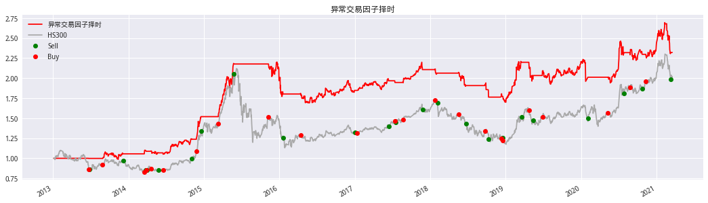
# 风险指标
Strategy_performance(algorithm_ret,'daily').style.format('{:.2%}')
| ret | |
|---|---|
| 年化收益率 | 11.23% |
| 波动率 | 14.68% |
| 夏普 | 80.54% |
| 最大回撤 | -23.19% |
# 展示交易明细
trade_info.show_all()
| 交易次数 | 23 | ||||
|---|---|---|---|---|---|
| 持仓总天数 | 1078 | ||||
| 胜率 | 56.52% | ||||
| 日胜率 | 29.05% | ||||
| 交易明细 | Buy | Sell | Hold_days | Hold_returns | |
| 0 | 2013-06-24 | 2013-06-26 | 3 | -0.48% | |
| 1 | 2013-08-29 | 2013-12-09 | 66 | 6.09% | |
| 2 | 2014-03-20 | 2014-03-27 | 6 | 3.13% | |
| 3 | 2014-03-28 | 2014-03-31 | 2 | 0.52% | |
| 4 | 2014-04-21 | 2014-05-27 | 25 | -0.74% | |
| 5 | 2014-06-18 | 2014-11-05 | 95 | 15.22% | |
| 6 | 2014-11-27 | 2014-12-19 | 17 | 21.41% | |
| 7 | 2015-03-13 | 2015-05-27 | 52 | 29.99% | |
| 8 | 2015-11-10 | 2016-01-20 | 51 | -20.52% | |
| 9 | 2016-04-13 | 2017-01-03 | 179 | 3.85% | |
| 10 | 2017-01-13 | 2017-06-14 | 99 | 6.25% | |
| 11 | 2017-07-14 | 2017-07-17 | 2 | -0.97% | |
| 12 | 2017-08-21 | 2017-11-27 | 66 | 8.22% | |
| 13 | 2018-01-25 | 2018-02-05 | 8 | -5.01% | |
| 14 | 2018-05-18 | 2018-06-22 | 25 | -9.01% | |
| 15 | 2018-09-25 | 2018-10-11 | 8 | -6.15% | |
| 16 | 2018-12-10 | 2018-12-17 | 6 | -0.49% | |
| 17 | 2018-12-19 | 2019-03-19 | 58 | 22.22% | |
| 18 | 2019-04-24 | 2019-05-15 | 13 | -7.01% | |
| 19 | 2019-06-28 | 2020-02-04 | 145 | 1.01% | |
| 20 | 2020-05-08 | 2020-07-28 | 56 | 17.32% | |
| 21 | 2020-08-25 | 2020-10-23 | 38 | -1.24% | |
| 22 | 2020-11-10 | 2021-03-10 | 81 | 4.22% | |
show_worst_drawdown_periods(algorithm_ret.dropna())
fig,ax = plt.subplots(figsize=(18,4))
plot_drawdown_periods(algorithm_ret.dropna(),5,ax)
ax.plot(benchmark['close'] / benchmark['close'][0],color='darkgray')
| Worst drawdown periods | Net drawdown in % | Peak date | Valley date | Recovery date | Duration |
|---|---|---|---|---|---|
| 0 | 23.19 | 2015-12-21 | 2016-05-24 | 2019-03-05 | 837 |
| 1 | 14.41 | 2021-02-09 | 2021-03-08 | NaT | NaN |
| 2 | 13.12 | 2020-01-10 | 2020-05-21 | 2020-07-02 | 125 |
| 3 | 12.86 | 2019-03-15 | 2019-08-06 | 2020-01-06 | 212 |
| 4 | 9.80 | 2020-07-10 | 2020-09-23 | 2021-01-04 | 127 |
[<matplotlib.lines.Line2D at 0x7fbdceb99320>]
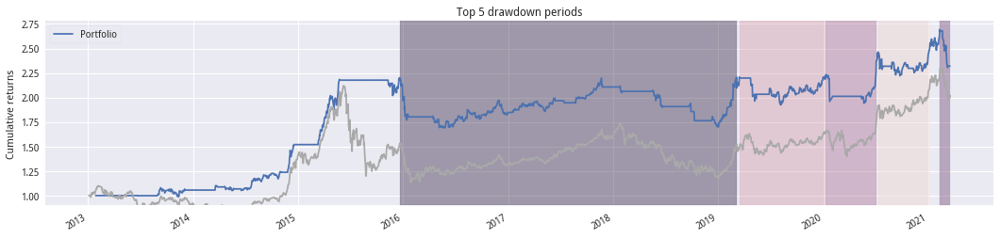
# 查看信号
S = grid_search.best_params_['creatSignal__shortperiod']
L = grid_search.best_params_['creatSignal__longperiod']
log_bottom_30 = np.log(bottom_ser.rolling(S).mean())
log_top_30 = np.log(top_ser.rolling(S).mean())
log_bottom_60 = np.log(bottom_ser.rolling(L).mean())
log_top_60 = np.log(top_ser.rolling(L).mean())
# 差值
diff_signal_30 = log_bottom_30 - log_top_30
diff_signal_60 = log_bottom_60 - log_top_60
fig,ax = plt.subplots(figsize=(18,4))
ax.set_title('最优参数下的信号')
ax.plot(benchmark['close'],label='HS300',color='darkgray')
plot_trade_pos(trade_info,benchmark['close'],ax=ax)
ax1 = ax.twinx()
ax1.plot(diff_signal_30,label='S_' + str(S),color='r')
ax1.plot(diff_signal_60,label='L_' + str(L))
h1,l1 = ax.get_legend_handles_labels()
h2,l2 = ax1.get_legend_handles_labels()
ax.legend(h1+h2,l1+l2)
plt.grid(False)
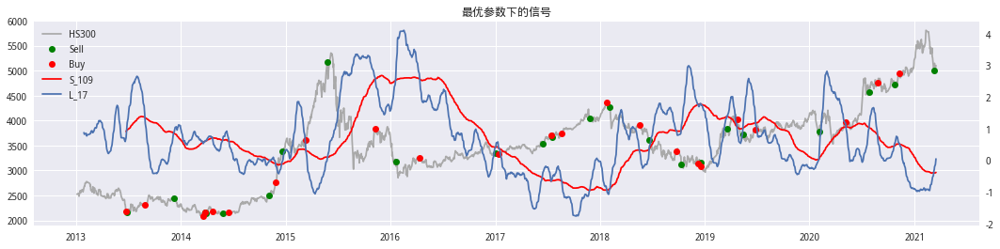
构思三:#
以头部/底部因子组合因子值为信号
# 信号获取
top_factor_val = factor_df[rank_df=='G5'].mean(axis=1)
bottom_factor_val = factor_df[rank_df=='G1'].mean(axis=1)
查看信号与指数的关系
# 时间设置
startDt = top_factor_val.index.min().strftime('%Y-%m-%d')
endDt = top_factor_val.index.max().strftime('%Y-%m-%d')
# 基准
benchmark = get_price('000300.XSHG',startDt,endDt,fields='close',panel=False)
fig,axes = plt.subplots(2,figsize=(18,4 * 2))
axes[0].set_title('顶部组合')
top_factor_val.plot(ax=axes[0])
ax1 = axes[0].twinx()
benchmark.plot(ax=ax1,color='r')
plt.grid(False)
axes[1].set_title('底部组合')
bottom_factor_val.plot(ax=axes[1])
ax1 = axes[1].twinx()
benchmark.plot(ax=ax1,color='r')
plt.grid(False)
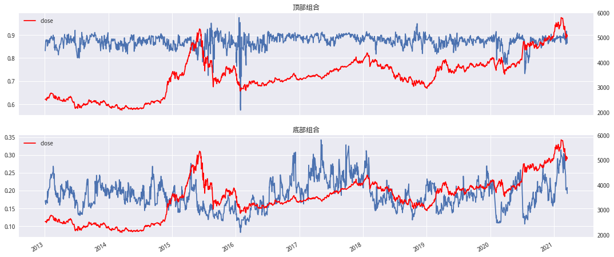
show_corrocef(benchmark['close'],signal_df['signal'],'信号与未来收益的相关性')
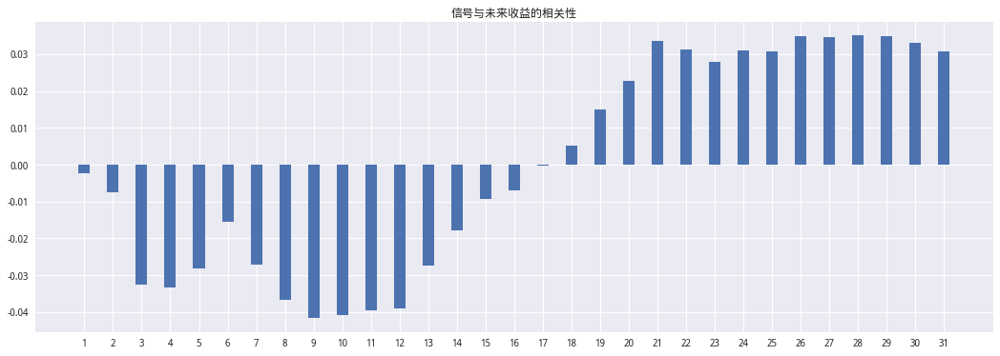
构造信号:计算N日标准分,以标准分为信号进行择时
# 标准分
N = 120
signal = (top_factor_val - top_factor_val.rolling(N).mean()) / top_factor_val.rolling(N).std()
signal.describe()
count 1874.000000
mean -0.011293
std 1.096084
min -5.951681
25% -0.592134
50% 0.175104
75% 0.725229
max 3.561617
dtype: float64
line = signal.plot(secondary_y=True,
figsize=(18,4),color='r',
title='信号于指数的关系',
alpha=0.7,
label='标准分信号')
benchmark['close'].plot(ax=line,color='darkgray',label='HS300')
plt.legend()
<matplotlib.legend.Legend at 0x7fcf08600e48>
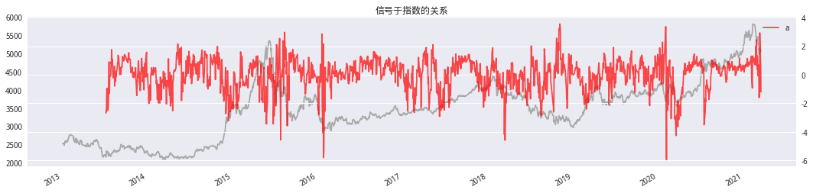
回测构建
信号大于h值开仓,小于l值平仓
# 标记持仓
def get_pos(signal:pd.Series,h:float,l:float)->pd.Series:
'''
高于h时开仓,低于l时平仓,1为持仓,0为空仓
-------
signal:信号 index-date,value-信号
h,l:高低阈值
'''
per_signal = signal.shift(1)
per_pos = 0
pos = pd.Series(np.ones(len(signal)),index=signal.index)
for trade,v in signal.items():
per = per_signal[trade]
if per:
if v > h and per <= h:
pos[trade] = 1
per_pos = 1
elif v < l and per >= l:
pos[trade] = 0
per_pos = 0
else:
pos[trade] = per_pos
else:
if v > h:
pos[trade] = 1
per_pos = 1
elif v < l:
pos[trade] = 0
per_pos = 0
else:
pos[trade] = 0
return pos
# 开仓阈值-1,2
pos = get_pos(signal,-1, 2)
next_ret = benchmark['close'].pct_change().shift(-1)
trade_info = tradeAnalyze(flag,next_ret) # 初始化交易信息
algorithm_ret = pos * next_ret
(1 + ep.cum_returns(algorithm_ret)).plot(figsize=(18,4),color='r',title='回测',label='净值')
(benchmark['close'] / benchmark['close'][0]).plot(color='darkgray',label='HS300')
plot_trade_pos(trade_info,benchmark['close'] / benchmark['close'][0])
plt.legend()
<matplotlib.legend.Legend at 0x7fcf03ca6160>
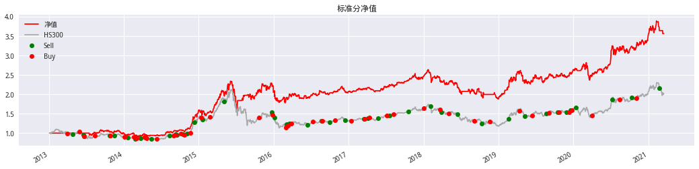
# 风险指标
Strategy_performance(algorithm_ret,'daily').style.format('{:.2%}')
| ret | |
|---|---|
| 年化收益率 | 13.15% |
| 波动率 | 13.94% |
| 夏普 | 95.63% |
| 最大回撤 | -23.85% |
show_worst_drawdown_periods(algorithm_ret.dropna())
fig,ax = plt.subplots(figsize=(18,4))
plot_drawdown_periods(algorithm_ret.dropna(),5,ax)
ax.plot(benchmark['close'] / benchmark['close'][0],color='darkgray')
| Worst drawdown periods | Net drawdown in % | Peak date | Valley date | Recovery date | Duration |
|---|---|---|---|---|---|
| 0 | 31.58 | 2015-06-05 | 2015-07-07 | 2017-10-10 | 613 |
| 1 | 28.54 | 2018-01-23 | 2019-01-02 | 2019-12-31 | 506 |
| 2 | 16.77 | 2013-09-11 | 2014-03-19 | 2014-10-30 | 297 |
| 3 | 16.08 | 2020-03-04 | 2020-03-20 | 2020-06-30 | 85 |
| 4 | 9.09 | 2015-01-06 | 2015-02-05 | 2015-03-13 | 49 |
[<matplotlib.lines.Line2D at 0x7fcf03f674e0>]
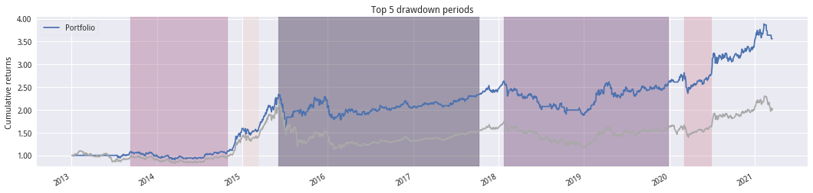
trade_info.show_all()
| 交易次数 | 45 | ||||
|---|---|---|---|---|---|
| 持仓总天数 | 1047 | ||||
| 胜率 | 57.78% | ||||
| 日胜率 | 28.00% | ||||
| 交易明细 | Buy | Sell | Hold_days | Hold_returns | |
| 0 | 2013-04-01 | 2013-04-26 | 18 | -1.63% | |
| 1 | 2013-05-28 | 2013-06-17 | 12 | -8.81% | |
| 2 | 2013-06-20 | 2013-06-21 | 2 | -6.48% | |
| 3 | 2013-08-13 | 2013-10-25 | 47 | 0.59% | |
| 4 | 2013-10-29 | 2013-11-15 | 14 | 2.52% | |
| 5 | 2014-01-03 | 2014-01-22 | 14 | -2.51% | |
| 6 | 2014-02-20 | 2014-02-26 | 5 | -5.94% | |
| 7 | 2014-03-03 | 2014-03-24 | 16 | -0.57% | |
| 8 | 2014-04-11 | 2014-04-17 | 5 | -2.04% | |
| 9 | 2014-04-21 | 2014-05-15 | 17 | -1.85% | |
| 10 | 2014-06-12 | 2014-08-11 | 43 | 9.22% | |
| 11 | 2014-09-01 | 2014-09-09 | 6 | 3.24% | |
| 12 | 2014-09-11 | 2014-09-17 | 5 | -0.59% | |
| 13 | 2014-10-08 | 2014-10-16 | 7 | -1.48% | |
| 14 | 2014-10-23 | 2014-11-04 | 9 | 4.44% | |
| 15 | 2014-11-20 | 2014-12-10 | 15 | 23.22% | |
| 16 | 2015-01-13 | 2015-01-20 | 6 | 1.45% | |
| 17 | 2015-02-26 | 2015-05-05 | 47 | 25.02% | |
| 18 | 2015-10-22 | 2015-12-23 | 45 | 8.90% | |
| 19 | 2015-12-28 | 2016-01-06 | 7 | -11.82% | |
| 20 | 2016-02-29 | 2016-03-04 | 5 | 7.71% | |
| 21 | 2016-03-10 | 2016-03-17 | 6 | 5.17% | |
| 22 | 2016-03-29 | 2016-06-14 | 52 | -0.30% | |
| 23 | 2016-07-12 | 2016-08-22 | 30 | 2.18% | |
| 24 | 2016-08-24 | 2016-09-29 | 25 | -2.27% | |
| 25 | 2016-10-28 | 2016-12-15 | 35 | 0.28% | |
| 26 | 2017-01-12 | 2017-03-17 | 42 | 3.95% | |
| 27 | 2017-03-21 | 2017-04-05 | 10 | 1.39% | |
| 28 | 2017-04-11 | 2017-05-25 | 32 | -1.00% | |
| 29 | 2017-07-07 | 2017-07-18 | 8 | 2.02% | |
| 30 | 2017-08-09 | 2017-10-20 | 48 | 5.29% | |
| 31 | 2018-01-04 | 2018-02-05 | 23 | 0.58% | |
| 32 | 2018-03-21 | 2018-03-29 | 7 | -4.01% | |
| 33 | 2018-05-03 | 2018-06-15 | 32 | -4.43% | |
| 34 | 2018-09-05 | 2018-10-11 | 21 | -3.59% | |
| 35 | 2018-11-19 | 2019-02-20 | 61 | 4.83% | |
| 36 | 2019-04-12 | 2019-05-09 | 17 | -6.31% | |
| 37 | 2019-06-14 | 2019-08-22 | 50 | 4.72% | |
| 38 | 2019-09-03 | 2019-10-18 | 28 | 0.79% | |
| 39 | 2019-10-24 | 2019-11-28 | 26 | -1.02% | |
| 40 | 2019-12-11 | 2019-12-18 | 6 | 3.17% | |
| 41 | 2019-12-25 | 2020-01-13 | 13 | 4.91% | |
| 42 | 2020-04-01 | 2020-07-07 | 64 | 26.64% | |
| 43 | 2020-08-14 | 2020-10-12 | 36 | 3.11% | |
| 44 | 2020-11-04 | 2021-02-24 | 75 | 13.33% | |
构思四:#
思路来源基于相对强弱下单向波动差值应用
# 信号获取
top_factor_val = factor_df[rank_df=='G5'].mean(axis=1)
bottom_factor_val = factor_df[rank_df=='G1'].mean(axis=1)
# 时间设置
startDt = top_factor_val.index.min().strftime('%Y-%m-%d')
endDt = top_factor_val.index.max().strftime('%Y-%m-%d')
# 基准
benchmark = get_price('000300.XSHG',startDt,endDt,fields='close',panel=False)
benchmark_ret = benchmark['close'].pct_change()
# 与上行收益相关的信号 矢量化处理 不用在这一步纠结未来函数的委托
tmp_signal = np.where(benchmark_ret > 0,1,0) * top_factor_val
N = 120 # 窗口为N
top_signal = tmp_signal.rolling(N).std()
基本上在信号处于下降趋势时指数上涨,信号上升时指数下跌,是一个负相关。不过阴影部分貌似信号失效了。
# 画图
top_signal.plot(secondary_y=True,figsize=(18,4))
benchmark['close'].plot()
plt.axvspan(xmin='2020-09-01',xmax=endDt,color='darkgray',alpha=0.4)
<matplotlib.patches.Polygon at 0x7fcf03999198>
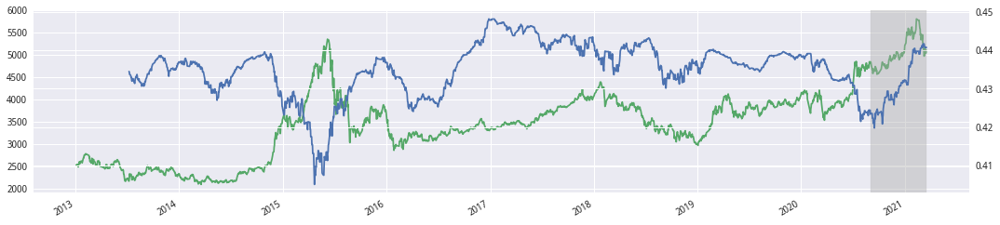
信号与未来的收益相关性情况
show_corrocef(benchmark['close'],top_signal,'信号与收益的相关系数')
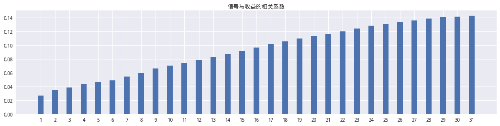
回测
信号15日斜率向下持有(即小于0),向上时平仓
pos = (talib.LINEARREG_SLOPE(top_signal,15) < 0) * 1
next_ret = benchmark_ret.shift(-1)
algorithm_ret = pos * next_ret
trade_info = tradeAnalyze(flag,next_ret) # 初始化交易信息
(1 + ep.cum_returns(algorithm_ret)).plot(figsize=(18,4),title='回测',label='净值',color='r')
(benchmark['close'] / benchmark['close'][0]).plot(label='HS300',color='darkgray')
plot_trade_pos(trade_info,benchmark['close'] / benchmark['close'][0])
<matplotlib.axes._subplots.AxesSubplot at 0x7fcf03587860>
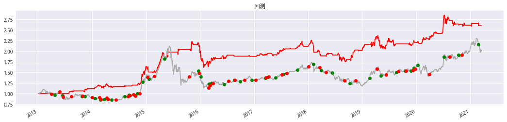